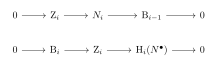
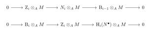
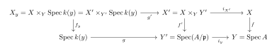
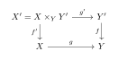
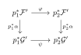

Morphisms of Schemes
Flat Morphism
Flat Morphism
Definition 2.1 (Standard Scheme). A Standard Scheme is defined as a separated scheme of finite type over a Noetherian universally catenary integral domain with finite Krull dimension.
Flat Morphism
Basic Facts about Flat Module
We begin by recalling the definitions of flat and faithfully flat modules over a commutative ring R with identity.
Definition 2.2 (Flat and Faithfully Flat Modules). Let R be a commutative ring. An R-module M is said to be flat if the tensor product functor - \otimes_R M \colon \text{Mod}_R \to \text{Mod}_R is exact. That is, for any injective homomorphism of R-modules N' \to N, the induced homomorphism N' \otimes_R M \to N \otimes_R M is also injective.
An R-module M is said to be faithfully flat if it is flat and, for any R-module N, the condition N \otimes_R M = 0 implies N = 0.
For flat modules, we have the following fundamental properties:
Proposition 2.1 (). Let R be a commutative ring.
Direct Sums and Finite Products: A direct sum \bigoplus_{i \in I} M_i of R-modules is flat if and only if each M_i is flat. In particular, any finite direct sum (or equivalently, finite direct product) of flat R-modules is flat.
Free Modules: Any free R-module is flat.
Localization: For any multiplicatively closed subset S \subset R, the localization S^{-1}R is a flat R-algebra.
Lazard’s Theorem: An R-module M is flat if and only if it is a filtered colimit (directed limit) of finitely generated free R-modules.
Filtered Colimits: The filtered colimit of a system of flat R-modules is flat.
Completion: If R is a Noetherian ring and I \subset R is an ideal, then the I-adic completion \widehat{R} of R is a flat R-algebra.
Local Property: An R-module M is flat over R if and only if the localization M_{\mathfrak{p}} is flat over R_{\mathfrak{p}} for every prime ideal \mathfrak{p} \subset R (or equivalently, for every maximal ideal \mathfrak{m} \subset R).
Proposition 2.1 (). Let A be a ring and M an A-module. The following conditions are equivalent:
M is flat.
For any A-module N, we have \operatorname{Tor}_i^A(M, N) = 0 for all i \ge 1.
For any finitely generated A-module N, we have \operatorname{Tor}_i^A(M, N) = 0 for all i \ge 1.
For any A-module N, we have \operatorname{Tor}_1^A(M, N) = 0.
For any finitely generated A-module N, we have \operatorname{Tor}_1^A(M, N) = 0.
For any ideal I of A, we have \operatorname{Tor}_1^A(M, A/I) = 0.
For any finitely generated ideal I of A, we have \operatorname{Tor}_1^A(M, A/I) = 0.
For any ideal I of A, the canonical homomorphism I \otimes_A M \to M, \quad a \otimes x \mapsto ax is injective, that is, it induces an isomorphism I \otimes_A M \cong IM.
For any finitely generated ideal I of A, the canonical homomorphism I \otimes_A M \to M, \quad a \otimes x \mapsto ax is injective.
Proposition 2.1 (). Let R be a commutative ring with identity.
Torsion-freeness over Integral Domains: If R is an integral domain, then every flat R-module is torsion-free.
Dedekind Domains: If R is a Dedekind domain, then an R-module is flat if and only if it is torsion-free.
PIDs: If R is a PID, then an R-module M is flat if and only if it is torsion-free. Furthermore, if M is additionally assumed to be finitely generated, then M is flat \iff M is torsion-free \iff M is free.
Projective Modules: Every projective R-module is flat.
Finitely Generated Flat Modules: Every finitely presented flat R-module is projective. (If R is local, then every finitely generated flat R-module is free.)
Proposition 2.1 (). Let \phi \colon A \to B be a ring homomorphism.
Base Change: If M is a flat A-module, then the tensor product M \otimes_A B is a flat B-module.
Restriction of Scalars: Let N be a B-module. If N is flat as a B-module and B is flat as an A-module (via \phi), then N is flat when viewed as an A-module via restriction of scalars.
Proof.
Let N' \hookrightarrow N be an injective homomorphism of B-modules. By the associativity of tensor products, we have an isomorphism of B-modules: (M \otimes_A B) \otimes_B N \cong M \otimes_A (B \otimes_B N) \cong M \otimes_A N Since M is a flat A-module, the functor M \otimes_A (-) preserves the exactness of N' \hookrightarrow N viewed as A-modules. Thus, (M \otimes_A B) \otimes_B (-) is exact, meaning M \otimes_A B is a flat B-module.
Let M' \hookrightarrow M be an injective homomorphism of A-modules. Because B is a flat A-module, the induced map M' \otimes_A B \to M \otimes_A B remains injective. Since N is a flat B-module, tensor-multiplying this injection by N over B yields an injection: (M' \otimes_A B) \otimes_B N \to (M \otimes_A B) \otimes_B N By the associativity of the tensor product, this map is precisely M' \otimes_A N \to M \otimes_A N. Hence, N is flat as an A-module.
◻
Proposition 2.1 (Equivalent Conditions for Faithfully Flat Modules). Let A be a commutative ring and M be an A-module. The following statements are equivalent:
M is faithfully flat (i.e., M is flat, and a sequence of A-modules N_1 \to N_2 \to N_3 is exact if and only if M \otimes_A N_1 \to M \otimes_A N_2 \to M \otimes_A N_3 is exact).
M is flat, and for any A-module N, N \neq 0 \iff M \otimes_A N \neq 0.
M is flat, and for any prime ideal \mathfrak{p} \in \operatorname{Spec}(A), M \otimes_A \kappa(\mathfrak{p}) \neq 0, where \kappa(\mathfrak{p}) = A_{\mathfrak{p}}/\mathfrak{p}A_{\mathfrak{p}} is the residue field at \mathfrak{p}.
M is flat, and for any maximal ideal \mathfrak{m} \in \mathrm{Max}(A), M \otimes_A \kappa(\mathfrak{m}) \neq 0, where \kappa(\mathfrak{m}) = A/\mathfrak{m}.
Proof. The equivalence (1) \iff (2) is standard and can be directly verified from the definition. Since M is flat, the functor M \otimes_A - is exact. Faithful flatness is equivalent to this functor also reflecting exactness, which naturally translates to reflecting zero modules.
(2) \implies (3): For any prime ideal \mathfrak{p} \in \operatorname{Spec}(A), the residue field \kappa(\mathfrak{p}) is a non-zero A-module. By (2), we immediately have M \otimes_A \kappa(\mathfrak{p}) \neq 0.
(3) \implies (4): This is trivially true since every maximal ideal is a prime ideal. For a maximal ideal \mathfrak{m}, the residue field is given by \kappa(\mathfrak{m}) = A_{\mathfrak{m}}/\mathfrak{m}A_{\mathfrak{m}} \cong A/\mathfrak{m}.
(4) \implies (2): Assume condition (4) holds. We need to show that if N is a non-zero A-module, then M \otimes_A N \neq 0. Suppose N \neq 0. Since the property of a module being zero is a local property, there exists a maximal ideal \mathfrak{m} \subset A such that the localization N_{\mathfrak{m}} \neq 0.
Take a non-zero element x \in N_{\mathfrak{m}}. Its annihilator I = \mathrm{Ann}_{A_{\mathfrak{m}}}(x) is a proper ideal of A_{\mathfrak{m}}, which means I \subseteq \mathfrak{m}A_{\mathfrak{m}}. This gives an inclusion of A_{\mathfrak{m}}-modules: A_{\mathfrak{m}}/I \hookrightarrow N_{\mathfrak{m}}. Since M_{\mathfrak{m}} is flat over A_{\mathfrak{m}}, tensoring with M_{\mathfrak{m}} preserves this injection: M_{\mathfrak{m}} \otimes_{A_{\mathfrak{m}}} (A_{\mathfrak{m}}/I) \hookrightarrow M_{\mathfrak{m}} \otimes_{A_{\mathfrak{m}}} N_{\mathfrak{m}}. Furthermore, since I \subseteq \mathfrak{m}A_{\mathfrak{m}}, there is a canonical surjection A_{\mathfrak{m}}/I \twoheadrightarrow A_{\mathfrak{m}}/\mathfrak{m}A_{\mathfrak{m}} = \kappa(\mathfrak{m}). Tensoring with M_{\mathfrak{m}} (which is exact), we see that M_{\mathfrak{m}} \otimes_{A_{\mathfrak{m}}} \kappa(\mathfrak{m}) is a quotient of M_{\mathfrak{m}} \otimes_{A_{\mathfrak{m}}} (A_{\mathfrak{m}}/I).
Notice that M_{\mathfrak{m}} \otimes_{A_{\mathfrak{m}}} \kappa(\mathfrak{m}) \cong M \otimes_A \kappa(\mathfrak{m}), which is non-zero by condition (4). Therefore, the quotient being non-zero implies M_{\mathfrak{m}} \otimes_{A_{\mathfrak{m}}} (A_{\mathfrak{m}}/I) \neq 0, which forces M_{\mathfrak{m}} \otimes_{A_{\mathfrak{m}}} N_{\mathfrak{m}} \neq 0.
Since M_{\mathfrak{m}} \otimes_{A_{\mathfrak{m}}} N_{\mathfrak{m}} \cong (M \otimes_A N)_{\mathfrak{m}}, it follows that M \otimes_A N has a non-zero localization at \mathfrak{m}. Thus, the global module M \otimes_A N must be non-zero. ◻
Theorem 2.1 (Going-Down Theorem for Flat Morphisms). Let \varphi: A \to B be a flat ring homomorphism. Let \mathfrak{p}_1 \subsetneq \mathfrak{p}_2 be prime ideals in A, and let \mathfrak{q}_2 \in \operatorname{Spec}(B) be a prime ideal such that \mathfrak{q}_2^c = \varphi^{-1}(\mathfrak{q}_2) = \mathfrak{p}_2. Then there exists a prime ideal \mathfrak{q}_1 \in \operatorname{Spec}(B) such that \mathfrak{q}_1 \subsetneq \mathfrak{q}_2 and \mathfrak{q}_1^c = \varphi^{-1}(\mathfrak{q}_1) = \mathfrak{p}_1.
Proof. Since \varphi(\mathfrak{p}_2) \subseteq \mathfrak{q}_2, the homomorphism \varphi induces a local ring homomorphism \varphi_{\mathfrak{q}_2}: A_{\mathfrak{p}_2} \to B_{\mathfrak{q}_2}. Because B is a flat A-algebra, the localization B_{\mathfrak{q}_2} is a flat A_{\mathfrak{p}_2}-algebra. A local homomorphism of local rings that is flat is necessarily faithfully flat. Thus, \varphi_{\mathfrak{q}_2} is a faithfully flat morphism.
A fundamental property of faithfully flat ring homomorphisms is that the induced map on the prime spectra is surjective. Consequently, the continuous map \operatorname{Spec}(B_{\mathfrak{q}_2}) \to \operatorname{Spec}(A_{\mathfrak{p}_2}) is surjective.
The strict inclusion \mathfrak{p}_1 \subsetneq \mathfrak{p}_2 means that \mathfrak{p}_1 corresponds to a prime ideal \mathfrak{p}_1 A_{\mathfrak{p}_2} in the local ring A_{\mathfrak{p}_2}. By the surjectivity of the spectrum map, there exists a prime ideal in B_{\mathfrak{q}_2} that contracts to \mathfrak{p}_1 A_{\mathfrak{p}_2}. By the correspondence theorem for localizations, such a prime ideal corresponds exactly to a prime ideal \mathfrak{q}_1 \subseteq \mathfrak{q}_2 in B.
By the commutativity of the localization mappings, the contraction of \mathfrak{q}_1 to A under \varphi must be exactly \mathfrak{p}_1. Finally, since \mathfrak{p}_1 \subsetneq \mathfrak{p}_2, it trivially follows that \mathfrak{q}_1 \subsetneq \mathfrak{q}_2. This completes the proof of the going-down theorem for flat morphisms. ◻
Definition of Flat Morphism
Definition 2.3 (Flat Sheaves and Flat Morphisms). Let f: X \to Y be a morphism of schemes, and let \mathcal{F} be an \mathcal{O}_X-module. We say that \mathcal{F} is flat over Y if, for every point x \in X, the stalk \mathcal{F}_x is a flat module over the local ring \mathcal{O}_{Y, f(x)}. (Here, the module structure is naturally induced by the local ring homomorphism f^\sharp _x: \mathcal{O}_{Y, f(x)} \to \mathcal{O}_{X,x}).
We say that the morphism f: X \to Y is a flat morphism (or simply that X is flat over Y) if its structure sheaf \mathcal{O}_X is flat over Y.
Proposition 2.1 (Local Criteria for Flatness of a Sheaf). Let f \colon X \to Y be a morphism of schemes, and let \mathcal{F} be a coherent \mathcal{O}_X-module. The following conditions are equivalent:
\mathcal{F} is flat over Y. That is, for every point x \in X, the stalk \mathcal{F}_x is a flat \mathcal{O}_{Y, f(x)}-module.
There exists an affine open cover \{V_i\} of X and affine open subsets U_i \subset Y with f(V_i) \subset U_i such that \mathcal{F}(V_i) is a flat \mathcal{O}_Y(U_i)-module.
For any affine open subset V \subset X and affine open subset U \subset Y such that f(V) \subset U, \mathcal{F}(V) is a flat \mathcal{O}_Y(U)-module.
Proof. (3) \implies (2): This is trivial. Since X can be covered by affine open subsets and Y also has an affine open cover, we can arbitrarily choose an affine open cover \{V_i\} of X and corresponding affine open subsets U_i of Y such that f(V_i) \subset U_i. By condition (3), it directly follows that \mathcal{F}(V_i) is a flat \mathcal{O}_Y(U_i)-module.
(2) \implies (1): Let x \in X be an arbitrary point. Choose an index i such that x \in V_i, and let y = f(x) \in U_i. Let A = \mathcal{O}_Y(U_i), B = \mathcal{O}_X(V_i), and M = \mathcal{F}(V_i). By condition (2), M is a flat A-module. Let \mathfrak{p} \subset A and \mathfrak{q} \subset B be the prime ideals corresponding to y and x, respectively. The stalk \mathcal{F}_x is isomorphic to the localization M_{\mathfrak{q}}, and the local ring \mathcal{O}_{Y, y} is isomorphic to A_{\mathfrak{p}}. We need to prove that M_{\mathfrak{q}} is a flat A_{\mathfrak{p}}-module.
By the base change property (Proposition (1)), the tensor product M \otimes_A A_{\mathfrak{p}} \cong M_{\mathfrak{p}} is a flat A_{\mathfrak{p}}-module. Note that M_{\mathfrak{q}} can be obtained as a localization of M_{\mathfrak{p}} viewed as a B_{\mathfrak{p}}-module; specifically, M_{\mathfrak{q}} \cong (M_{\mathfrak{p}})_{\mathfrak{q} B_{\mathfrak{p}}}. To test flatness over A_{\mathfrak{p}}, let 0 \to N' \to N be an exact sequence of A_{\mathfrak{p}}-modules. We apply the tensor product functor - \otimes_{A_{\mathfrak{p}}} M_{\mathfrak{q}}. Since M_{\mathfrak{q}} \cong M_{\mathfrak{p}} \otimes_{B_{\mathfrak{p}}} B_{\mathfrak{q}}, we have: N \otimes_{A_{\mathfrak{p}}} M_{\mathfrak{q}} \cong (N \otimes_{A_{\mathfrak{p}}} M_{\mathfrak{p}}) \otimes_{B_{\mathfrak{p}}} B_{\mathfrak{q}} Because M_{\mathfrak{p}} is a flat A_{\mathfrak{p}}-module, the induced map N' \otimes_{A_{\mathfrak{p}}} M_{\mathfrak{p}} \to N \otimes_{A_{\mathfrak{p}}} M_{\mathfrak{p}} remains injective. Furthermore, since B_{\mathfrak{q}} is a localization of B_{\mathfrak{p}}, it is a flat B_{\mathfrak{p}}-module (Proposition (3)), meaning the functor - \otimes_{B_{\mathfrak{p}}} B_{\mathfrak{q}} is exact. The composition of two exact functors is exact, which proves that the map N' \otimes_{A_{\mathfrak{p}}} M_{\mathfrak{q}} \to N \otimes_{A_{\mathfrak{p}}} M_{\mathfrak{q}} is injective. Thus, M_{\mathfrak{q}} is a flat A_{\mathfrak{p}}-module.
(1) \implies (3): Let V = \operatorname{Spec} B \subset X and U = \operatorname{Spec} A \subset Y be affine open subsets such that f(V) \subset U. Let M = \mathcal{F}(V). Condition (1) implies that for every x \in V, the stalk \mathcal{F}_x \cong M_{\mathfrak{q}} is a flat \mathcal{O}_{Y, f(x)} \cong A_{\mathfrak{p}}-module, where \mathfrak{q} \subset B and \mathfrak{p} \subset A are the corresponding prime ideals. We need to show that M is a flat A-module.
Let 0 \to N' \to N be an exact sequence of A-modules. Consider the induced sequence after tensoring with M: 0 \to K \to N' \otimes_A M \to N \otimes_A M where K is the kernel. Note that N' \otimes_A M and N \otimes_A M naturally inherit a B-module structure, making K a B-module. By the local property of flatness (Proposition (7)), to show K = 0, it is sufficient to prove that K_{\mathfrak{q}} = 0 for every maximal ideal \mathfrak{q} \subset B.
Localization at \mathfrak{q} is an exact functor on the category of B-modules (Proposition (3)), yielding the exact sequence: 0 \to K_{\mathfrak{q}} \to (N' \otimes_A M)_{\mathfrak{q}} \to (N \otimes_A M)_{\mathfrak{q}} We can rewrite the terms as follows: (N \otimes_A M)_{\mathfrak{q}} \cong N \otimes_A M_{\mathfrak{q}} \cong (N \otimes_A A_{\mathfrak{p}}) \otimes_{A_{\mathfrak{p}}} M_{\mathfrak{q}} \cong N_{\mathfrak{p}} \otimes_{A_{\mathfrak{p}}} M_{\mathfrak{q}}. Therefore, the map (N' \otimes_A M)_{\mathfrak{q}} \to (N \otimes_A M)_{\mathfrak{q}} naturally identifies with: N'_{\mathfrak{p}} \otimes_{A_{\mathfrak{p}}} M_{\mathfrak{q}} \to N_{\mathfrak{p}} \otimes_{A_{\mathfrak{p}}} M_{\mathfrak{q}} Since localization at \mathfrak{p} is an exact functor on A-modules, the sequence 0 \to N'_{\mathfrak{p}} \to N_{\mathfrak{p}} is exact. By our hypothesis, M_{\mathfrak{q}} is a flat A_{\mathfrak{p}}-module, which guarantees that the map N'_{\mathfrak{p}} \otimes_{A_{\mathfrak{p}}} M_{\mathfrak{q}} \to N_{\mathfrak{p}} \otimes_{A_{\mathfrak{p}}} M_{\mathfrak{q}} is injective. This injectivity implies K_{\mathfrak{q}} = 0 for all maximal ideals \mathfrak{q} \subset B. Consequently, we conclude K = 0, proving that M is indeed a flat A-module. ◻
Fundamental Properties and Characterizations of Flatness
Proposition 2.1 (Open Immersions are Flat). Let f \colon X \to Y be an open immersion of schemes. Then f is a flat morphism.
Proof. Let x \in X be an arbitrary point, and let y = f(x). Since f is an open immersion, it induces an isomorphism on the local rings, meaning \mathcal{O}_{X, x} \cong \mathcal{O}_{Y, y}. Thus, \mathcal{O}_{X, x} is a free \mathcal{O}_{Y, y}-module of rank 1. Since any free module is flat (Proposition (2)), \mathcal{O}_{X, x} is a flat \mathcal{O}_{Y, y}-module. Therefore, f is a flat morphism. ◻
Proposition 2.1 (Stability Properties of Flat Morphisms). Flat morphisms of schemes satisfy the following stability properties:
Composition: If f \colon X \to Y and g \colon Y \to Z are flat morphisms, then the composition g \circ f \colon X \to Z is flat.
Base Change: If f \colon X \to Y is a flat morphism, and h \colon Y' \to Y is any morphism of schemes, then the base change morphism f' \colon X' = X \times_Y Y' \to Y' is flat.
Products: Let S be a base scheme. If f_1 \colon X_1 \to Y_1 and f_2 \colon X_2 \to Y_2 are flat morphisms of S-schemes, then their product f_1 \times_S f_2 \colon X_1 \times_S X_2 \to Y_1 \times_S Y_2 is a flat morphism.
Proof. (1) Composition: Let x \in X. We need to show that the stalk \mathcal{O}_{X, x} is a flat \mathcal{O}_{Z, g(f(x))}-module. Since f is flat, \mathcal{O}_{X, x} is a flat \mathcal{O}_{Y, f(x)}-module. Since g is flat, \mathcal{O}_{Y, f(x)} is a flat \mathcal{O}_{Z, g(f(x))}-module. By the restriction of scalars property for flat modules (Proposition (2)), when \mathcal{O}_{X, x} is viewed as an \mathcal{O}_{Z, g(f(x))}-module via the composition of local ring homomorphisms \mathcal{O}_{Z, g(f(x))} \to \mathcal{O}_{Y, f(x)} \to \mathcal{O}_{X, x}, it is flat. Thus, g \circ f is flat.
(2) Base Change: By the local criteria for flatness (Proposition ), flatness can be checked on affine open covers. We can choose affine open subsets U = \operatorname{Spec} A \subset Y, V = \operatorname{Spec} B \subset X with f(V) \subset U, and U' = \operatorname{Spec} A' \subset Y' with h(U') \subset U. The fiber product V \times_U U' is the affine scheme \operatorname{Spec}(B \otimes_A A'). Since f is flat, the local criterion implies that B is a flat A-module. By the base change property for flat modules (Proposition (1)), B \otimes_A A' is a flat A'-module. Since these affine patches cover the fiber product X \times_Y Y', the morphism f' is flat.
(3) Products: The product morphism f_1 \times_S f_2 can be factored as the composition of two morphisms: X_1 \times_S X_2 \xrightarrow{f_1 \times \operatorname{id}_{X_2}} Y_1 \times_S X_2 \xrightarrow{\operatorname{id}_{Y_1} \times f_2} Y_1 \times_S Y_2 The first morphism, f_1 \times \operatorname{id}_{X_2}, is the base change of the flat morphism f_1 \colon X_1 \to Y_1 along the projection Y_1 \times_S X_2 \to Y_1. Thus, it is flat by the base change property proved in part (2). Similarly, the second morphism \operatorname{id}_{Y_1} \times f_2 is the base change of the flat morphism f_2 along the projection Y_1 \times_S X_2 \to X_2, so it is also flat. Since the composition of flat morphisms is flat as proved in part (1), their composition f_1 \times_S f_2 is a flat morphism. ◻
Cohomology Property of Flat Morphism
Proposition 2.1 (Homology and Flat Tensor Product). Let A be a ring, M a flat A-module, and N^\bullet a chain (or cochain) complex of A-modules. Then for all integers i, there is a natural isomorphism: \mathrm{H}_i(N^\bullet \otimes_A M) \cong \mathrm{H}_i(N^\bullet) \otimes_A M (Similarly, for a cochain complex, \mathrm{H}^i(N^\bullet \otimes_A M) \cong \mathrm{H}^i(N^\bullet) \otimes_A M).
Proof. Let \operatorname{d}_i \colon N_i \to
N_{i-1} be the differentials of the complex N^\bullet. Define \mathrm{Z}_i = \ker(\operatorname{d}_i)
and \mathrm{B}_i =
\operatorname{im}(\operatorname{d}_{i+1}). By definition,
we have the following short exact sequences of A-modules:
 
Theorem 2.1 (Flat Base Change Theorem for Sheaf Cohomology). Let f \colon X \to Y be a morphism of standard schemes, and let g \colon Y' \to Y be a flat morphism. Consider the fiber product X' = X \times_Y Y', with canonical projections f' \colon X' \to Y' and g' \colon X' \to X. For any quasi-coherent \mathcal{O}_X-module \mathcal{F} and all integers i \ge 0, the natural base change homomorphism g^* {\operatorname{R}^i f}_* \mathcal{F} \xrightarrow{\sim} {\operatorname{R}^i f}'_* (g'^* \mathcal{F}) is an isomorphism.
Proof. The question is local on the base schemes, so we may assume without loss of generality that Y = \operatorname{Spec} A and Y' = \operatorname{Spec} B, where B is a flat A-algebra. Consequently, B is a flat A-module. The pullback functor g^* corresponds to the tensor product - \otimes_A B.
Since f is quasi-compact and separated, we can choose a finite affine open cover \mathcal{U} = \{U_j\}_{j=1}^m of X. The separatedness of X ensures that all finite intersections U_{j_0 \dots j_p} are affine. Therefore, the higher direct images can be computed via the Čech complex C^\bullet(\mathcal{U}, \mathcal{F}) of A-modules: {\operatorname{R}^i f}_* \mathcal{F} \cong \left( {\operatorname{H}^i }(C^\bullet(\mathcal{U}, \mathcal{F})) \right)^{\sim} For the fiber product X', the affine open subsets U'_j = U_j \times_Y Y' form an affine open cover \mathcal{U}' = \{U'_j\} of X'. The intersections are U'_{j_0 \dots j_p} \cong U_{j_0 \dots j_p} \times_{\operatorname{Spec} A} \operatorname{Spec} B, which correspond to the rings \mathcal{O}_X(U_{j_0 \dots j_p}) \otimes_A B. Hence, the Čech complex for X' with coefficients in g'^*\mathcal{F} is obtained by tensoring the original Čech complex with B: C^\bullet(\mathcal{U}', g'^*\mathcal{F}) \cong C^\bullet(\mathcal{U}, \mathcal{F}) \otimes_A B By Proposition , since B is a flat A-module, taking cohomology commutes with the tensor product: {\operatorname{H}^i }(C^\bullet(\mathcal{U}', g'^*\mathcal{F})) \cong {\operatorname{H}^i }(C^\bullet(\mathcal{U}, \mathcal{F}) \otimes_A B) \cong {\operatorname{H}^i }(C^\bullet(\mathcal{U}, \mathcal{F})) \otimes_A B Applying the sheafification functor (\cdot)^{\sim} on \operatorname{Spec} B to this isomorphism of B-modules exactly yields {\operatorname{R}^i f}'_* (g'^* \mathcal{F}) \cong g^* {\operatorname{R}^i f}_* \mathcal{F}. This completes the proof. ◻
Proposition 2.1 (Cohomology of the Fiber via Flat Base Change). Let f: X \to Y be a morphism of standard schemes, and let \mathcal{F} be a quasi-coherent \mathcal{O}_X-module. Assume that Y = \operatorname{Spec}A is affine.
For any point y \in Y, let X_y be the schematic fiber over y, and let \mathcal{F}_y be the pullback of \mathcal{F} to X_y. Let i_y: \overline{\{y\}} \hookrightarrow Y be the closed immersion of the closure of y with its reduced induced subscheme structure. Let \mathcal{K}_y = i_{y*} (\mathcal{O}_{\overline{\{y\}}}) be its structure sheaf viewed as an \mathcal{O}_Y-module.
Then for all i \ge 0, there are natural isomorphisms of k(y)-modules: \operatorname{H}^i(X_y, \mathcal{F}_y) \cong \operatorname{H}^i(X, \mathcal{F} \otimes_{\mathcal{O}_X} f^*\mathcal{K}_y) \otimes_A k(y).
Proof. Let \mathfrak{p} \subset A be the prime ideal corresponding to the point y \in Y = \operatorname{Spec} A. The closed subscheme \overline{\{y\}} with its reduced structure is isomorphic to the affine scheme Y' = \operatorname{Spec}(A/\mathfrak{p}). Thus, the sheaf \mathcal{K}_y on Y corresponds to the A-module A/\mathfrak{p}.
Consider the Cartesian square formed by the closed immersion
i_y \colon Y' \hookrightarrow
Y:

By the projection formula, we have a canonical isomorphism: i_{X'*}\mathcal{F}' \cong \mathcal{F} \otimes_{\mathcal{O}_X} i_{X'*}\mathcal{O}_{X'} \cong \mathcal{F} \otimes_{\mathcal{O}_X} f^*\mathcal{K}_y Because i_{X'} is a closed immersion, the cohomology of \mathcal{F}' on X' is naturally isomorphic to the cohomology of its pushforward on X. Therefore, for all i \ge 0: \operatorname{H}^i(X', \mathcal{F}') \cong \operatorname{H}^i(X, \mathcal{F} \otimes_{\mathcal{O}_X} f^*\mathcal{K}_y)
Next, consider the residue field k(y) at the point y. By Proposition (3), localization is a flat algebra. Consequently, the canonical morphism g \colon \operatorname{Spec} k(y) \to Y' is a flat morphism of schemes.
The schematic fiber X_y = X \times_Y \operatorname{Spec} k(y) over y can be canonically identified with the base change of X' along g, meaning X_y \cong X' \times_{Y'} \operatorname{Spec} k(y). Let g' \colon X_y \to X' be the corresponding projection. The pullback of \mathcal{F} to X_y is exactly \mathcal{F}_y = g'^* \mathcal{F}'.
Since f \colon X \to Y is separated and quasi-compact, and these properties are stable under base change, making f' \colon X' \to Y' separated and quasi-compact as well. We are now in the exact setting of the Flat Base Change Theorem for Sheaf Cohomology (Theorem ) applied to the morphism f' and the flat base change g.
Applying Theorem , we obtain an isomorphism of sheaves on \operatorname{Spec} k(y): g^* \operatorname{R}^i f'_* \mathcal{F}' \xrightarrow{\sim} \operatorname{R}^i f_{y*} \mathcal{F}_y where f_y \colon X_y \to \operatorname{Spec} k(y) is the structure morphism of the fiber. Because both Y' and \operatorname{Spec} k(y) are affine schemes, taking global sections directly corresponds to the cohomology groups. The pullback g^* on global sections corresponds to tensoring with k(y) over the ring A/\mathfrak{p}. Thus, taking global sections gives: \operatorname{H}^i(X_y, \mathcal{F}_y) \cong \operatorname{H}^i(X', \mathcal{F}') \otimes_{A/\mathfrak{p}} k(y) Finally, because k(y) is an A/\mathfrak{p}-algebra, tensoring with k(y) over A/\mathfrak{p} is equivalent to tensoring over A. Substituting \operatorname{H}^i(X', \mathcal{F}') with \operatorname{H}^i(X, \mathcal{F} \otimes_{\mathcal{O}_X} f^*\mathcal{K}_y), we obtain the required natural isomorphisms: \operatorname{H}^i(X_y, \mathcal{F}_y) \cong \operatorname{H}^i(X, \mathcal{F} \otimes_{\mathcal{O}_X} f^*\mathcal{K}_y) \otimes_A k(y) ◻
Base Change Theorem in Derived Category
Theorem 2.1 (Derived Flat Base Change Theorem). Let f \colon X \to Y be a morphism of standard schemes, and let g \colon Y' \to Y be a flat morphism. Consider the Cartesian square:
For any object \mathcal{F}^\bullet \in \mathbf{D}^+_{\mathrm{qc}}(X) (the bounded below derived category of \mathcal{O}_X-modules with quasi-coherent cohomology), the natural base change morphism g^* \mathbf{R} f_* \mathcal{F}^\bullet \xrightarrow{\sim} \mathbf{R} f'_* (g'^* \mathcal{F}^\bullet) is an isomorphism in \mathbf{D}^+_{\mathrm{qc}}(Y'). (Note that because g and g' are flat morphisms, the left derived pullback functors \mathbf{L}g^* and \mathbf{L}g'^* coincide with the exact underived pullbacks g^* and g'^*).
Proof. The question is local on the base, so we may assume that Y = \operatorname{Spec} A and Y' = \operatorname{Spec} B, where B is a flat A-algebra. The pullback g^* thus corresponds to the exact functor - \otimes_A B.
Let \mathcal{F}^\bullet \xrightarrow{\sim} \mathcal{I}^\bullet be an injective resolution of \mathcal{F}^\bullet. Since f is quasi-compact and separated, we can compute the derived pushforward \mathbf{R} f_* \mathcal{F}^\bullet using a Čech complex of a finite affine open cover \mathcal{U} = \{U_j\} of X. Since \mathcal{F}^\bullet is a complex bounded below, the derived pushforward is then computed by the total complex of the double complex C^\bullet(\mathcal{U}, \mathcal{I}^\bullet).
For the fiber product X', the affine open subsets U'_j = U_j \times_Y Y' form a finite affine open cover \mathcal{U}'. Because B is a flat A-module, tensoring the Čech complex with B preserves quasi-isomorphisms. Thus, the complex computing \mathbf{R} f'_* (g'^* \mathcal{F}^\bullet) is naturally identified with the complex computing \mathbf{R} f_* \mathcal{F}^\bullet tensored with B: C^\bullet(\mathcal{U}', g'^*\mathcal{I}^\bullet) \cong C^\bullet(\mathcal{U}, \mathcal{I}^\bullet) \otimes_A B By Proposition , taking the cohomology of a complex commutes with tensoring with a flat module. Therefore, taking the cohomology of the total complex yields the required isomorphism g^* \mathbf{R} f_* \mathcal{F}^\bullet \xrightarrow{\sim} \mathbf{R} f'_* (g'^* \mathcal{F}^\bullet) in the derived category. ◻
Proposition 2.1 (Derived Cohomology of a Fibre for a Flat Morphism). Let f\colon X\to Y=\operatorname{Spec}A be quasi-compact, separated, and flat, and let \mathcal F^\bullet\in D^+_{\mathrm{qc}}(X). Let y\leftrightarrow\mathfrak p\in\operatorname{Spec}A, put Y_0=\operatorname{Spec}(A/\mathfrak p) and X_0=X\times_Y Y_0, and let p_y\colon X_y\to X be the fibre projection. If \mathcal K_y=\widetilde{A/\mathfrak p} on Y, then there is a natural isomorphism \mathbf R\Gamma\left(X_y,\mathbf Lp_y^*\mathcal F^\bullet\right) \simeq \mathbf R\Gamma\Bigl( X,\mathcal F^\bullet\otimes_{\mathcal O_X}^{\mathbf L}f^*\mathcal K_y \Bigr) \otimes_{A/\mathfrak p} k(y). The final tensor product is underived because k(y) is a localization of A/\mathfrak p.
Proof. Because f is flat, \mathbf Lf^*\widetilde{A/\mathfrak p} =f^*\widetilde{A/\mathfrak p} \cong \mathcal O_{X_0}. Let i\colon X_0\hookrightarrow X. The derived projection formula for the closed immersion gives \mathbf Ri_*\mathbf Li^*\mathcal F^\bullet \simeq \mathcal F^\bullet\otimes_{\mathcal O_X}^{\mathbf L}i_*\mathcal O_{X_0} \simeq \mathcal F^\bullet\otimes_{\mathcal O_X}^{\mathbf L}f^*\mathcal K_y. Since i_* is exact, taking derived global sections identifies the right-hand side before tensoring with \mathbf R\Gamma(X_0,\mathbf Li^*\mathcal F^\bullet). The morphism \operatorname{Spec}k(y)\to\operatorname{Spec}(A/\mathfrak p) is flat, so flat derived base change yields \mathbf R\Gamma\left(X_y,\mathbf Lp_y^*\mathcal F^\bullet\right) \simeq \mathbf R\Gamma(X_0,\mathbf Li^*\mathcal F^\bullet) \otimes_{A/\mathfrak p}k(y), which is the asserted formula. ◻
Topological Properties of Flat Morphism
Faithfully Flat Morphism
Proposition 2.1 (Equivalent Conditions for Faithfully Flat Morphisms). Let \varphi: A \to B be a flat ring homomorphism, and let f: \operatorname{Spec}(B) \to \operatorname{Spec}(A) be the induced morphism of affine schemes. The following statements are equivalent:
f is surjective (and thus f is a faithfully flat morphism).
B is a faithfully flat A-module.
Every closed point of \operatorname{Spec}(A) is in the image of f.
Proof. (1) \implies (3): This is trivial. If f is surjective, then every point of \operatorname{Spec}(A), including all closed points, lies in the image of f.
(3) \implies (2): The closed points of \operatorname{Spec}(A) correspond precisely to the maximal ideals \mathfrak{m} \in \mathrm{Max}(A). By assumption, for every maximal ideal \mathfrak{m} \subset A, there exists a prime ideal \mathfrak{q} \in \operatorname{Spec}(B) such that f(\mathfrak{q}) = \varphi^{-1}(\mathfrak{q}) = \mathfrak{m}. This implies that \varphi(\mathfrak{m}) \subseteq \mathfrak{q}, and therefore \mathfrak{m}B \subseteq \mathfrak{q} \subsetneq B. Consequently, B/\mathfrak{m}B \neq 0, which means B \otimes_A \kappa(\mathfrak{m}) \neq 0. By the previously established equivalent conditions for faithfully flat modules, B must be a faithfully flat A-module.
(2) \implies (1): Assume B is a faithfully flat A-module. For any prime ideal \mathfrak{p} \in \operatorname{Spec}(A), faithful flatness implies that B \otimes_A \kappa(\mathfrak{p}) \neq 0. Since B \otimes_A \kappa(\mathfrak{p}) \cong B_{\mathfrak{p}}/\mathfrak{p}B_{\mathfrak{p}}, this means \mathfrak{p}B_{\mathfrak{p}} \neq B_{\mathfrak{p}}. Thus, \mathfrak{p}B \cap A = \mathfrak{p}. By the properties of lying over, there exists a prime ideal \mathfrak{q} \in \operatorname{Spec}(B) such that \mathfrak{q}^c = \varphi^{-1}(\mathfrak{q}) = \mathfrak{p}. This proves that f is surjective. ◻
Corollary 2.1 (Flat Local Homomorphisms are Faithfully Flat). Let \varphi: (A, \mathfrak{m}_A) \to (B, \mathfrak{m}_B) be a local homomorphism of local rings. If \varphi is a flat morphism, then it is faithfully flat.
Proof. Since A is a local ring, \operatorname{Spec}(A) has exactly one closed point, which corresponds to its unique maximal ideal \mathfrak{m}_A. Because \varphi is a local homomorphism, it satisfies \varphi(\mathfrak{m}_A) \subseteq \mathfrak{m}_B. The contraction of \mathfrak{m}_B is \varphi^{-1}(\mathfrak{m}_B), which is a proper ideal of A containing \mathfrak{m}_A. Since \mathfrak{m}_A is maximal, we must have \varphi^{-1}(\mathfrak{m}_B) = \mathfrak{m}_A.
Therefore, the closed point \mathfrak{m}_A is in the image of the induced morphism \operatorname{Spec}(B) \to \operatorname{Spec}(A). Since \varphi is flat and every closed point of \operatorname{Spec}(A) is in the image, the morphism is faithfully flat by Proposition . ◻
Proposition 2.1 (Stability of Faithfully Flat Morphisms). Faithfully flat morphisms are stable under composition, base change, and products.
Proof. We address each property separately:
Composition: Let f: X \to Y and g: Y \to Z be faithfully flat morphisms. It is a standard fact that flatness is stable under composition, so g \circ f is flat. Furthermore, since both f and g are surjective mappings of underlying topological spaces, their composition g \circ f is also surjective. A flat and surjective morphism is faithfully flat, hence g \circ f is faithfully flat.
Base Change: Let f: X \to Y be a faithfully flat morphism, and let h: Y' \to Y be any arbitrary morphism of schemes. Consider the base change f': X \times_Y Y' \to Y'. Flatness is a local property that is stable under base change, so f' is flat. Additionally, surjectivity is preserved under base change in the category of schemes (the fibers of f' correspond to the fibers of f extended to the residue fields, which remain non-empty). Thus, f' is surjective, making it faithfully flat.
Products: Let f_1: X_1 \to Y_1 and f_2: X_2 \to Y_2 be faithfully flat morphisms. The product morphism f_1 \times f_2: X_1 \times X_2 \to Y_1 \times Y_2 can be factored into a composition of two base changes: X_1 \times X_2 \xrightarrow{f_1 \times \mathrm{id}_{X_2}} Y_1 \times X_2 \xrightarrow{\mathrm{id}_{Y_1} \times f_2} Y_1 \times Y_2. The first map is a base change of f_1 along the projection Y_1 \times X_2 \to Y_1, and the second map is a base change of f_2 along Y_1 \times X_2 \to X_2. Since faithfully flat morphisms are stable under base change and composition, the product f_1 \times f_2 is faithfully flat. ◻
Flat Morphism is Open
Theorem 2.1 (Flat Morphisms Locally of Finite Type are Open). Let \pi: X \to Y be a flat morphism of standard schemes. Then \pi is an (universally) open morphism.
Proof. Step 1: Reduction to the global image. To prove that \pi is an open morphism, we must show that for any open subset U \subset X, its image \pi(U) is an open subset of Y. An open immersion U \hookrightarrow X is both flat and locally of finite type. Consequently, the composition U \hookrightarrow X \xrightarrow{\pi} Y is also flat and locally of finite type. By replacing X with the open subset U, the problem naturally reduces to showing that for any flat, locally of finite type morphism \pi: X \to Y, the global image \pi(X) is open in Y.
Step 2: Reduction to affine schemes. The property of a subset being open is local on the target space. Therefore, we can cover Y with affine open subschemes V_i = \operatorname{Spec}(B_i). The intersection of the image with V_i is precisely \pi(\pi^{-1}(V_i)). For each V_i, we can cover the preimage \pi^{-1}(V_i) with affine open subschemes U_{ij} = \operatorname{Spec}(A_{ij}). The total image \pi(X) is then the union of all images \pi(U_{ij}). Since an arbitrary union of open sets is open, it suffices to prove that the image of each affine piece U_{ij} is open in the affine target V_i. Thus, we may assume without loss of generality that X = \operatorname{Spec}(A) and Y = \operatorname{Spec}(B) are affine schemes, and the morphism \pi corresponds to a flat ring homomorphism B \to A of finite type.
Step 3: Constructibility via Chevalley’s Theorem. Because \pi: \operatorname{Spec}(A) \to \operatorname{Spec}(B) is a morphism of finite type between affine schemes, we can invoke Chevalley’s Theorem. Chevalley’s Theorem states that the image of any constructible set under a morphism of finite type is again a constructible set. The entire affine space X = \operatorname{Spec}(A) is trivially a constructible set, which implies that its image \pi(X) is a constructible subset of Y = \operatorname{Spec}(B).
Step 4: Stability under generalization using Going-down. A standard result in the Zariski topology of schemes establishes that a constructible subset is open if and only if it is stable under generalization. Therefore, it remains to verify that \pi(X) is stable under generalization.
Let \mathfrak{q}' \in \pi(X) be a point in the image, and let \mathfrak{q} \in \operatorname{Spec}(B) be a generalization of \mathfrak{q}'. In terms of prime ideals, this corresponds to the inclusion \mathfrak{q} \subset \mathfrak{q}'. Because \mathfrak{q}' \in \pi(X), there exists a prime ideal \mathfrak{p}' \in \operatorname{Spec}(A) such that \pi(\mathfrak{p}') = \mathfrak{q}'.
Since \pi is a flat morphism, the Going-down theorem for flat morphisms applies. Given the inclusion of prime ideals \mathfrak{q} \subset \mathfrak{q}' in B and the prime ideal \mathfrak{p}' in A lying over \mathfrak{q}', there exists a prime ideal \mathfrak{p} \subset \mathfrak{p}' in A such that \pi(\mathfrak{p}) = \mathfrak{q}.
This demonstrates that \mathfrak{q} \in \pi(X). Consequently, the image \pi(X) is stable under generalization. Since \pi(X) is a constructible set that is stable under generalization, it must be an open subset of Y. This concludes the proof. ◻
Corollary 2.1 (Projections of Fiber Products over Fields are Open). Let X and Y be standard varieties over a field k. Then the projection morphisms from the fiber product X \times_{\operatorname{Spec}k} Y \to X and X \times_{\operatorname{Spec}k} Y \to Y are open morphisms.
More generally, every flat morphism locally of finite presentation is universally open.
Proof. We prove this for the first projection \pi_1: X \times_{\operatorname{Spec}k} Y \to X. Since Y is an algebraic variety over k, the structure morphism Y \to \operatorname{Spec}k is locally of finite type. The property of being locally of finite type is stable under base change, meaning the induced projection \pi_1 is locally of finite type over X.
Furthermore, because k is a field, every k-module is a vector space and is therefore free and flat. This makes the structure morphism Y \to \operatorname{Spec}k trivially a flat morphism. Since flatness is also stable under base change, the projection \pi_1 is a flat morphism. ◻
Theorem 2.1 (Generic Flatness). If \pi: X \to Y is a finite type morphism of schemes, Y is reduced, and \mathcal{F} is a finite type quasicoherent sheaf on X, then there is a dense open subscheme U \subset Y such that \mathcal{F}|_{\pi^{-1}(U)} is of finite presentation over \pi^{-1}(U), and flat over U.
Proof. The proof of this theorem is omitted. See (Vakil 2025, Theorem 24.5.13) for details. ◻
Theorem 2.1 (The Flat Locus is Open). Suppose \pi: X \to Y is a locally finite type morphism of locally Noetherian schemes, and \mathcal{F} is a coherent sheaf on X.
The locus of points of X at which \mathcal{F} is Y-flat is an open subset of X.
If \pi is closed (e.g., proper), then the locus of points of Y over which \mathcal{F} is flat (i.e., those q \in Y for which \mathcal{F} is flat at all p \in \pi^{-1}(q)) is an open subset of Y.
Proof. The proof of this theorem is omitted. See (Vakil 2025, Theorem 24.5.16) for details. ◻
Quotient Topology of Faithfully Flat Morphisms
Lemma 2.1 (Preimage of a Pro-constructible Set). Let Y be a standard scheme, Z \subseteq Y a pro-constructible set, and f \colon X \to Y a generizing morphism of schemes. Then \overline{f^{-1}(Z)} = f^{-1}(\overline{Z}).
Proof. The claim can be checked locally on Y. Moreover, if V \subseteq Y is an open quasi-compact subset, V \cap Z is again pro-constructible. Thus we may assume that Y = \operatorname{Spec}A is affine.
Clearly we have \overline{f^{-1}(Z)} \subseteq f^{-1}(\overline{Z}). Let x \in U := X \setminus \overline{f^{-1}(Z)}, then \operatorname{Spec}\mathcal{O}_{X,x} \subseteq U \subseteq f^{-1}(Y \setminus Z) and hence \operatorname{Spec}\mathcal{O}_{Y,f(x)} = f(\operatorname{Spec}\mathcal{O}_{X,x}) \subseteq Y \setminus Z. We claim that this implies y := f(x) \notin \overline{Z} (which proves the lemma).
Indeed let Y' = \operatorname{Spec}A' be an affine scheme and g \colon Y' \to Y a morphism such that Z = g(Y'). Let \mathfrak{p} \subset A be the prime ideal corresponding to y. As g^{-1}(\operatorname{Spec}\mathcal{O}_{Y,y}) = \emptyset, we have \varinjlim_{s \notin \mathfrak{p}} (A_s \otimes_A A') = A_{\mathfrak{p}} \otimes_A A' = 0 Thus there exists an s \in A \setminus \mathfrak{p} such that 1 = 0 in A_s \otimes_A A', i.e., such that D(s) \cap Z = \emptyset. This shows y \notin \overline{Z}. ◻
Lemma 2.1 (Quotient Topology for Generizing Morphisms). Let f \colon X \to Y be a morphism of schemes. Let Z \subseteq f(X) be a subset such that F := f^{-1}(Z) is closed in X. If F \hookrightarrow X \to Y is a quasi-compact morphism and f is generizing, then Z is closed in f(X), i.e., Z = \overline{Z} \cap f(X).
Proof. The question is local on Y. We thus may assume that Y is affine. Let Z \subseteq f(X) be a subset such that F := f^{-1}(Z) is closed in X. We have to show that Z is closed in f(X), i.e. Z = \overline{Z} \cap f(X).
Endow F with its reduced subscheme structure, then F \hookrightarrow X \to Y is a quasi-compact morphism and thus its image Z is pro-constructible. Thus we have Z = f(f^{-1}(Z)) = f(\overline{f^{-1}(Z)}) = f(f^{-1}(\overline{Z})) = \overline{Z} \cap f(X), where the third equality follows from Lemma . ◻
Theorem 2.1 (Faithfully Flat Morphisms of Standard Schemes are Universally Submersive). Let f \colon X \to Y be a faithfully flat morphism between standard schemes. Then f is a topological quotient map. Furthermore, f is universally submersive.
Proof. Step 1: f is a topological quotient map.
By definition, a standard scheme is of finite type over a Noetherian ring, which implies that both X and Y are Noetherian schemes. Consequently, they are inherently quasi-compact and quasi-separated. Furthermore, any morphism between Noetherian schemes is automatically a quasi-compact morphism.
Since f is a flat morphism, it satisfies the Going-Down Theorem (Theorem ). Geometrically, this translates to f being a generizing morphism.
To prove that f induces the quotient topology, we must show that for any subset Z \subseteq Y, if the preimage f^{-1}(Z) is closed in X, then Z is closed in Y.
Let F = f^{-1}(Z) and assume F is closed in X. Because f is faithfully flat, it is surjective (Proposition ), meaning we can recover Z entirely as the image of its preimage: f(F) = f(f^{-1}(Z)) = Z.
Endow F with its reduced induced subscheme structure. Since X is a Noetherian scheme, the closed subscheme F is also Noetherian, and is therefore quasi-compact. This makes the composed morphism F \hookrightarrow X \xrightarrow{f} Y a quasi-compact morphism.
We are now exactly in the setting of Lemma :
Y is a qcqs scheme.
f is a generizing morphism.
F \hookrightarrow X \to Y is quasi-compact.
Applying the lemma directly yields that Z = f(F) is closed in f(X) = Y. Thus, f is a topological quotient map.
Step 2: f is universally submersive.
A morphism is universally submersive if its base change along any arbitrary morphism of schemes g \colon Y' \to Y remains a topological quotient map.
Because the property of being a topological quotient map can be checked locally on the target space Y', we may assume without loss of generality that Y' is affine. An affine scheme is trivially qcqs.
By Corollary , the base-changed morphism f' \colon X' = X \times_Y Y' \to Y' is faithfully flat. This ensures that f' is both surjective and generizing.
Furthermore, we established in Step 1 that f is a quasi-compact morphism. Since quasi-compactness of morphisms is strictly stable under base change, the induced morphism f' is also quasi-compact.
We can now apply the exact same argument from Step 1 to the morphism f'. For any subset Z' \subseteq Y' whose preimage F' = f'^{-1}(Z') is closed in X', the morphism F' \hookrightarrow X' \xrightarrow{f'} Y' is quasi-compact. Applying Lemma over the qcqs scheme Y' proves that f' is a topological quotient map. Because this holds for any base change, f is universally submersive. ◻
Relative Dimension of Flat Morphisms
The essential point is that the following two quantities are different: \dim_x(X_y) \qquad\text{and}\qquad \dim \mathcal{O}_{X_y,x}. The first is the relative dimension at the point; the second is the dimension of the local ring of the fibre. They coincide only when \kappa(x)/\kappa(y) is algebraic.
Dimension at a point and the three fibre invariants
Definition 2.4 (Dimension at a point). Let T be a standard scheme and let t\in T. The dimension of T at t is \dim_t T := \inf_{t\in U\subseteq T}\dim U, where U runs through the open neighbourhoods of t.
Definition 2.5 (Pointwise relative dimension). Let f\colon X\to Y be of standard schemes, let x\in X, and put y=f(x). The pointwise relative dimension of f at x is d_f(x) := \operatorname{reldim}_x(f) := \dim_x(X_y), where X_y=X\times_Y\operatorname{Spec}\kappa(y) is the scheme-theoretic fibre.
Definition 2.6 (Fibre-local dimension and relative transcendence degree). With the same notation, define c_f(x):=\dim\mathcal{O}_{X_y,x} and \tau_f(x) := {\operatorname{trdeg}}_{\kappa(y)}\kappa(x). The number c_f(x) is the dimension of the local ring of the fibre at x; it may also be viewed as the fibre-local codimension of x.
Proposition 2.1 (Decomposition of pointwise relative dimension). For every morphism f\colon X\to Y of standard schemes and every x\in X with y=f(x), { d_f(x)=c_f(x)+\tau_f(x) } i.e. \dim_x(X_y) = \dim\mathcal{O}_{X_y,x} + {\operatorname{trdeg}}_{\kappa(y)}\kappa(x).
Proof. The fibre X_y is locally of finite type over the field \kappa(y). The usual dimension formula for a scheme locally of finite type over a field gives \dim_x(X_y) = \dim\mathcal{O}_{X_y,x} + {\operatorname{trdeg}}_{\kappa(y)}\kappa(x). ◻
Remark 2.1 (). The three terms have different meanings:
d_f(x) measures the dimension of the fibre in every sufficiently small neighbourhood of x;
c_f(x) measures the length of prime chains in the fibre ending at x;
\tau_f(x) measures the number of fibre parameters still present in the residue field of x.
At the generic point of a d-dimensional irreducible fibre component one has c_f(x)=0 and \tau_f(x)=d. At a closed point of that component one has c_f(x)=d and \tau_f(x)=0.
Morphisms of a prescribed relative dimension
Definition 2.7 (Relative dimension at most d and relative dimension d). Let f\colon X\to Y be of standard schemes and let d\geq 0.
The morphism f has relative dimension at most d at x if d_f(x)=\dim_x(X_{f(x)})\leq d.
The morphism f has relative dimension at most d if this holds for every x\in X.
The morphism f has relative dimension d if every nonempty fibre X_y is equidimensional of dimension d.
Equivalently, f has relative dimension d if and only if d_f(x)=d for every x\in X.
Corollary 2.1 (Relative dimension zero). A morphism f\colon X\to Y of standard schemes is quasi-finite at x if and only if d_f(x)=0. Consequently, f is locally quasi-finite if and only if it has relative dimension 0.
Proof. The equality d_f(x)=0 means that x is isolated in the fibre and that \kappa(x)/\kappa(f(x)) is algebraic. Since the morphism is locally of finite type, the residue-field extension is then finite, which is the local criterion for quasi-finiteness. ◻
The flat local dimension formula
Theorem 2.1 (Local-ring dimension formula for flat morphisms). Let f\colon X\to Y be a flat morphism of standard schemes. For x\in X and y=f(x), { \dim\mathcal{O}_{X,x} = \dim\mathcal{O}_{Y,y} + \dim\mathcal{O}_{X_y,x} } or, in the notation introduced above, { \dim\mathcal{O}_{X,x} = \dim\mathcal{O}_{Y,y}+c_f(x). }
Proof. The induced map \mathcal{O}_{Y,y}\longrightarrow \mathcal{O}_{X,x} is a flat local homomorphism of Noetherian local rings. Its closed fibre is \mathcal{O}_{X,x}/\mathfrak m_y\mathcal{O}_{X,x} \cong \mathcal{O}_{X_y,x}. The dimension theorem for flat local homomorphisms therefore gives \dim\mathcal{O}_{X,x} = \dim\mathcal{O}_{Y,y} + \dim\left(\mathcal{O}_{X,x}/\mathfrak m_y\mathcal{O}_{X,x}\right), which is the desired equality. ◻
Corollary 2.1 (Local-ring formula in terms of relative dimension). Let f\colon X\to Y be flat morphism of standard schemes. For every x\in X, with y=f(x), { \dim\mathcal{O}_{X,x} = \dim\mathcal{O}_{Y,y} + d_f(x) - {\operatorname{trdeg}}_{\kappa(y)}\kappa(x). } If f has relative dimension d, this becomes { \dim\mathcal{O}_{X,x} = \dim\mathcal{O}_{Y,y} +d - {\operatorname{trdeg}}_{\kappa(y)}\kappa(x). }
Proof. Substitute c_f(x)=d_f(x)-\tau_f(x) into the flat local-ring dimension formula. ◻
Remark 2.1 (). Even when f has relative dimension d, the local-ring increment is not always d. It equals d at fibre-closed points and equals 0 at generic points of d-dimensional fibre components.
Pointwise dimension of the total space
Theorem 2.1 (Pointwise dimension formula for flat morphisms). Let f\colon X\to Y be a flat morphism of standard schemes of relative dimension d. Then for every x\in X, with y=f(x), { \dim_xX=\dim_yY+d. }
Proof. The assertion is local on both X and Y. Shrinking around x and y, we may arrange that \dim X=\dim_xX, \qquad \dim Y=\dim_yY. A flat morphism locally of finite presentation is open. After shrinking Y further and replacing X by the inverse image, we may assume that f is surjective. Taking the supremum of the flat local-ring dimension formula over all points of X, and using that every nonempty fibre is equidimensional of dimension d, gives \dim X=\dim Y+d. This proves the pointwise formula. ◻
Remark 2.1 (). The preceding theorem uses the hypothesis that f has relative dimension d. For an arbitrary flat morphism, fibre dimensions may vary and there need not be a single integer d satisfying the formula everywhere.
Composition
Proposition 2.1 (Pointwise composition inequality). Let X\xrightarrow{f}Y\xrightarrow{g}Z be morphisms of standard schemes. For x\in X, put y=f(x) and z=g(y). Then { d_{g\circ f}(x) \leq d_f(x)+d_g(y). } Equality holds if f is flat at x.
Proof. Consider the morphism of fibres X_z\longrightarrow Y_z. Its fibre over y is X_y. The dimension inequality for a composition of morphisms locally of finite type gives \dim_x(X_z) \leq \dim_x(X_y)+\dim_y(Y_z). If f is flat at x, then the base-changed morphism X_z\to Y_z is flat at x, and the corresponding dimension formula is an equality. ◻
Corollary 2.1 (Additivity for flat morphisms of fixed relative dimension). Suppose that f\colon X\to Y has relative dimension d, that g\colon Y\to Z has relative dimension e, and that f is flat. Then g\circ f has relative dimension d+e.
If g is also flat, then g\circ f is flat of relative dimension d+e.
Proof. The preceding proposition gives d_{g\circ f}(x)=d_f(x)+d_g(f(x))=d+e for every x\in X. Hence every nonempty fibre of the composite is equidimensional of dimension d+e. ◻
Base change
Theorem 2.1 (Relative dimension under
arbitrary base change). Consider a Cartesian square

Proof. The fibre X'_{y'} is the scalar extension X_y\times_{\operatorname{Spec}\kappa(y)}\operatorname{Spec}\kappa(y'). Dimension at a specified point of a scheme locally of finite type over a field is invariant under extension of the ground field. Hence \dim_{x'}(X'_{y'})=\dim_x(X_y). ◻
Proposition 2.1 (What happens to the local ring of the fibre). In the situation of the preceding theorem, { \begin{aligned} &\dim\mathcal{O}_{X'_{y'},x'}-\dim\mathcal{O}_{X_y,x}\\ &\qquad= {\operatorname{trdeg}}_{\kappa(y)}\kappa(x) - {\operatorname{trdeg}}_{\kappa(y')}\kappa(x') \geq 0. \end{aligned} } Thus pointwise relative dimension is invariant under base change, whereas the dimension of the local ring of the fibre need not be invariant.
Proof. Use base-change invariance of d_f together with d_f(x)=c_f(x)+\tau_f(x) for both f and f'. ◻
Example 2.1 (Failure of invariance for fibre-local rings). Let k be a field, X=\mathbb A^1_k=\operatorname{Spec}k[T], and let x=(0) be its generic point. Then \dim\mathcal{O}_{X,x}=0. Put K=k(t) and base change to K. The point x'=(T-t)\in\operatorname{Spec}K[T] maps to x, but \dim\mathcal{O}_{X_K,x'}=1. Nevertheless, \dim_xX=\dim_{x'}X_K=1.
Semicontinuity and constant-relative-dimension loci
Theorem 2.1 (Upper semicontinuity of pointwise fibre dimension). Let f\colon X\to Y be locally of finite type. For every n\geq 0, the set F_n(f) := \{x\in X\mid d_f(x)\geq n\} is closed in X. Equivalently, the function x\longmapsto d_f(x)=\dim_x(X_{f(x)}) is upper semicontinuous.
Corollary 2.1 (Isolated points in fibres). The set \{x\in X\mid d_f(x)=0\} is open. It is precisely the locus where f is quasi-finite.
Proposition 2.1 (Cohen–Macaulay fibre decomposition). Let f\colon X\to Y be flat and locally of finite presentation. Assume that every fibre X_y is Cohen–Macaulay. Then there are open and closed subschemes X_d\subseteq X such that X=\coprod_{d\geq 0}X_d and f|_{X_d}\colon X_d\to Y has relative dimension d.
Remark 2.1 (). Without a condition such as Cohen–Macaulayness of the fibres, a flat morphism of finite presentation need not admit a global decomposition into pieces of constant relative dimension.
Theorem 2.1 (Proper flat families). Let f\colon X\to Y be proper, flat, and of finite presentation. The function y\longmapsto \dim X_y is locally constant on Y.
Remark 2.1 (). For a flat morphism of finite presentation the function y\mapsto\dim X_y is lower semicontinuous. Properness gives upper semicontinuity; together these imply local constancy.
Global absolute dimension and the image-depth defect
The next statement isolates the extra datum needed when one compares absolute Krull dimensions over a non-Jacobson base.
Definition 2.8 (Image-depth defect). Let f\colon X\to Y be a morphism of nonempty standard schemes. Define m_Y(f) := \sup_{y\in f(X)}\dim_yY and \varepsilon_Y(f) := \dim Y-m_Y(f). The number \varepsilon_Y(f) measures how much of the maximal local dimension of Y is missed by the image of f.
Theorem 2.1 (Global dimension formula with image-depth defect). Let f\colon X\to Y be flat morphism of nonempty standard schemes of relative dimension d. Then { \dim X = d+\sup_{y\in f(X)}\dim_yY } and therefore { \dim X = \dim Y+d-\varepsilon_Y(f). } In particular, if f is surjective, then \varepsilon_Y(f)=0 \qquad\text{and}\qquad \dim X=\dim Y+d.
Proof. By the pointwise dimension formula, \dim_xX=\dim_{f(x)}Y+d for every x\in X. Taking the supremum over x\in X gives \dim X = d+\sup_{y\in f(X)}\dim_yY. The second formula is the definition of \varepsilon_Y(f). ◻
Example 2.1 (An étale map may lower global dimension). Let R be a discrete valuation ring with uniformizer \pi and fraction field K. The open immersion \operatorname{Spec}K=D(\pi)\hookrightarrow\operatorname{Spec}R is flat and étale of relative dimension 0. Its image contains only the generic point, where the local dimension of \operatorname{Spec}R is 0. Hence m_{\operatorname{Spec}R}(f)=0, \qquad \varepsilon_{\operatorname{Spec}R}(f)=1, and \dim\operatorname{Spec}K = 0 = 1+0-1. Thus a flat or étale morphism preserves the appropriate pointwise dimension formula but need not preserve global dimension unless its image reaches the maximal-dimensional part of the target.
Compatibility with the dimension function of a standard base
Assume now that B=\operatorname{Spec}S, where S is a standard domain. Put \delta_B(s):=-\operatorname{ht}_S(s). For a standard B-scheme T\to B, define \delta_T(t) := \delta_B(\bar t) + {\operatorname{trdeg}}_{\kappa(\bar t)}\kappa(t), where \bar t is the image of t in B.
Proposition 2.1 (Change of the induced dimension function). Let f\colon X\to Y be a morphism of standard B-schemes and let x\mapsto y. Then { \delta_X(x) = \delta_Y(y) + {\operatorname{trdeg}}_{\kappa(y)}\kappa(x). } This identity does not require flatness.
Proof. Let s be the common image of x and y in B. The tower \kappa(s)\subseteq\kappa(y)\subseteq\kappa(x) gives additivity of transcendence degree: {\operatorname{trdeg}}_{\kappa(s)}\kappa(x) = {\operatorname{trdeg}}_{\kappa(s)}\kappa(y) + {\operatorname{trdeg}}_{\kappa(y)}\kappa(x). Substituting this into the definitions of \delta_X and \delta_Y gives the formula. ◻
Proposition 2.1 (Flat pullback shifts \delta-dimension). Let f\colon X\to Y be flat of relative dimension d. Let Z\subseteq Y be an integral closed subscheme, and assume f^{-1}(Z)\neq\varnothing. If W is an irreducible component of f^{-1}(Z), then W dominates Z and { \dim_\delta W=\dim_\delta Z+d. } Consequently, flat pullback has degree shift f^*\colon Z_k^\delta(Y)\longrightarrow Z_{k+d}^\delta(X) on cycle groups graded by the induced dimension function.
Proof. After replacing Y by Z and X by f^{-1}(Z), assume that Y is integral. A flat morphism locally of finite presentation is open, so the generic point \xi of W maps to the generic point \eta of Y. Since f has relative dimension d and \xi is a generic point of the fibre component, one has \dim\mathcal{O}_{X_\eta,\xi}=0, \qquad {\operatorname{trdeg}}_{\kappa(\eta)}\kappa(\xi)=d. The preceding proposition therefore yields \delta_X(\xi)=\delta_Y(\eta)+d. This is precisely \dim_\delta W=\dim_\delta Z+d. ◻
Künneth Formulae
Algebraic Form
Proposition 2.1 (The Künneth Spectral Sequence). Let A be a ring and let C^\bullet,D^\bullet\in D^+(A). There is a natural, convergent spectral sequence E^2_{r,s} = \bigoplus_{p+q=s} \operatorname{Tor}^{A}_{r}\left(H^p(C^\bullet),H^q(D^\bullet)\right) \Longrightarrow H^{s-r}\left(C^\bullet\otimes_A^{\mathbf L}D^\bullet\right). If one of the two families of cohomology modules is A-flat, it degenerates to canonical isomorphisms H^n\left(C^\bullet\otimes_A^{\mathbf L}D^\bullet\right) \cong \bigoplus_{p+q=n}H^p(C^\bullet)\otimes_A H^q(D^\bullet). In particular, the degeneration always occurs when A is a field.
Proof. Choose a bounded-below K-flat resolution P^\bullet\to C^\bullet and a Cartan–Eilenberg flat resolution of D^\bullet. The derived tensor product is represented by the total complex of the resulting double complex. Filtering that total complex by the resolution degree gives the displayed spectral sequence. Its E^2-page is obtained by first taking cohomology in the original cochain direction and then the homology of a flat resolution, which is exactly \operatorname{Tor}^A. Bounded-below hypotheses give convergence. If the relevant cohomology modules are flat, every row with r>0 vanishes, so no nonzero differential or extension can remain. ◻
Corollary 2.1 (Künneth Short Exact Sequence over a PID). Let A be a principal ideal domain and let C^\bullet,D^\bullet be bounded-below complexes of free A-modules. For every integer n there is a natural short exact sequence 0\longrightarrow \bigoplus_{p+q=n}H^p(C^\bullet)\otimes_AH^q(D^\bullet) \longrightarrow H^n(C^\bullet\otimes_A D^\bullet) \longrightarrow \bigoplus_{p+q=n+1} \operatorname{Tor}_1^A\left(H^p(C^\bullet),H^q(D^\bullet)\right) \longrightarrow0. It splits as a sequence of A-modules, but in general not naturally.
Relative Derived Künneth Formula
Let a\colon X\to S and b\colon Y\to S be morphisms, let Z=X\times_S Y, and write p\colon Z\to X,\qquad q\colon Z\to Y,\qquad h=a\circ p=b\circ q. For K\in D(\mathcal O_X) and M\in D(\mathcal O_Y) set K\boxtimes_S^{\mathbf L}M := \mathbf Lp^*K\otimes_{\mathcal O_Z}^{\mathbf L}\mathbf Lq^*M.
Definition 2.9 (Tor-Independence over the Base). The schemes X and Y are Tor-independent over S if for every x\in X and y\in Y with common image s\in S, \operatorname{Tor}^{\mathcal O_{S,s}}_i \left(\mathcal O_{X,x},\mathcal O_{Y,y}\right)=0 \qquad(i>0). This condition holds, in particular, if either a or b is flat.
Theorem 2.1 (Relative Derived Künneth Formula). Assume that a and b are quasi-compact and quasi-separated and that X and Y are Tor-independent over S. For K\in D_{\mathrm{qc}}(X) and M\in D_{\mathrm{qc}}(Y), the canonical cup-product morphism \mathbf Ra_*K\otimes_{\mathcal O_S}^{\mathbf L}\mathbf Rb_*M \longrightarrow \mathbf Rh_*\left(K\boxtimes_S^{\mathbf L}M\right) is an isomorphism in D_{\mathrm{qc}}(S).
If S=\operatorname{Spec}A is affine, then there is a natural isomorphism in D(A), \mathbf R\Gamma(X,K)\otimes_A^{\mathbf L}\mathbf R\Gamma(Y,M) \xrightarrow{\sim} \mathbf R\Gamma\left(Z,K\boxtimes_S^{\mathbf L}M\right).
Proof. Using h=a\circ p, the derived projection formula, Tor-independent derived base change, and then the projection formula once more, one obtains \begin{align*} \mathbf Rh_*\left(\mathbf Lp^*K\otimes^{\mathbf L}\mathbf Lq^*M\right) &\simeq \mathbf Ra_*\mathbf Rp_* \left(\mathbf Lp^*K\otimes^{\mathbf L}\mathbf Lq^*M\right)\\ &\simeq \mathbf Ra_*\Bigl( K\otimes^{\mathbf L}\mathbf Rp_*\mathbf Lq^*M \Bigr)\\ &\simeq \mathbf Ra_*\Bigl( K\otimes^{\mathbf L}\mathbf La^*\mathbf Rb_*M \Bigr)\\ &\simeq \mathbf Ra_*K\otimes_{\mathcal O_S}^{\mathbf L}\mathbf Rb_*M. \end{align*} The middle isomorphism is precisely the derived base-change isomorphism for the Cartesian square defining Z; Tor-independence is the hypothesis that makes that map an isomorphism. When S is affine, applying \mathbf R\Gamma(S,-) gives the global formula. ◻
Corollary 2.1 (Derived Künneth Formula over a Field). Let k be a field and let X and Y be standard k-varieties. For arbitrary K\in D_{\mathrm{qc}}(X) and M\in D_{\mathrm{qc}}(Y), \mathbf R\Gamma(X,K)\otimes_k^{\mathbf L}\mathbf R\Gamma(Y,M) \xrightarrow{\sim} \mathbf R\Gamma\Bigl( X\times_kY, \mathbf Lp^*K\otimes^{\mathbf L}\mathbf Lq^*M \Bigr).
Proof. Standard varieties are quasi-compact and separated. Every module over the field k is flat, so X and Y are automatically Tor-independent over \operatorname{Spec}k. Apply Theorem . ◻
The Usual Künneth Formula over a Field
For quasi-coherent sheaves \mathcal F on X and \mathcal G on Y, write \mathcal F\boxtimes_k\mathcal G := p^*\mathcal F\otimes_{\mathcal O_{X\times_kY}}q^*\mathcal G.
Theorem 2.1 (Künneth Formula for Quasi-Coherent Cohomology). Let k be a field, let X and Y be standard k-varieties, and let \mathcal F and \mathcal G be quasi-coherent sheaves on X and Y, respectively. For every n\ge0, cup product induces a canonical isomorphism \bigoplus_{p+q=n} H^p(X,\mathcal F)\otimes_k H^q(Y,\mathcal G) \xrightarrow{\sim} H^n\left(X\times_kY,\mathcal F\boxtimes_k\mathcal G\right). Properness and coherence are not required for the isomorphism; they are needed only when finite-dimensionality of the cohomology groups is desired.
Proof. Apply Corollary to the sheaves \mathcal F and \mathcal G placed in degree zero. Since all k-modules are flat, the derived exterior product agrees with the ordinary exterior product. The algebraic Künneth spectral sequence becomes E^2_{r,s} = \bigoplus_{p+q=s} \operatorname{Tor}^k_r \left(H^p(X,\mathcal F),H^q(Y,\mathcal G)\right) \Longrightarrow H^{s-r}\left(X\times_kY,\mathcal F\boxtimes_k\mathcal G\right). All terms with r>0 vanish because k is a field. The edge morphism is the usual pullback followed by cup product, and the surviving r=0 row gives the asserted canonical direct-sum decomposition. ◻
Corollary 2.1 (Structure Sheaf and Euler Characteristic). Let X and Y be standard k-varieties. Then H^n(X\times_kY,\mathcal O_{X\times_kY}) \cong \bigoplus_{p+q=n}H^p(X,\mathcal O_X)\otimes_kH^q(Y,\mathcal O_Y). If X and Y are proper and \mathcal F,\mathcal G are coherent, then \chi\left(X\times_kY,\mathcal F\boxtimes_k\mathcal G\right) = \chi(X,\mathcal F)\,\chi(Y,\mathcal G).
Proof. The first statement is the theorem with \mathcal F=\mathcal O_X and \mathcal G=\mathcal O_Y. In the proper coherent case all cohomology spaces are finite-dimensional. Taking the alternating sum of dimensions in the Künneth decomposition gives \begin{align*} \chi(X\times_kY,\mathcal F\boxtimes_k\mathcal G) &= \sum_{p,q}(-1)^{p+q} \dim_kH^p(X,\mathcal F)\dim_kH^q(Y,\mathcal G)\\ &= \left(\sum_p(-1)^p\dim_kH^p(X,\mathcal F)\right) \left(\sum_q(-1)^q\dim_kH^q(Y,\mathcal G)\right). \end{align*} ◻
A Relative Ordinary Version over an Affine Base
Theorem 2.1 (Relative Künneth Formula for Base-Flat Sheaves). Let S=\operatorname{Spec}A. Let X and Y be quasi-compact schemes over S with affine diagonal; in particular this applies to standard S-schemes. Let \mathcal F on X and \mathcal G on Y be quasi-coherent and flat over S. Then the canonical map \mathbf R\Gamma(X,\mathcal F)\otimes_A^{\mathbf L} \mathbf R\Gamma(Y,\mathcal G) \xrightarrow{\sim} \mathbf R\Gamma \left(X\times_SY,p^*\mathcal F\otimes q^*\mathcal G\right) is an isomorphism in D(A).
Proof. Choose finite affine covers of X and Y. Affineness of the diagonals implies that all finite intersections occurring in their alternating Čech complexes are affine. Since \mathcal F and \mathcal G are flat over S, sections on each such affine intersection are flat A-modules. Hence the two finite Čech complexes are bounded complexes of flat A-modules and are K-flat. They represent \mathbf R\Gamma(X,\mathcal F) and \mathbf R\Gamma(Y,\mathcal G).
There is a natural cup-product morphism from the total tensor product of these Čech complexes to the Čech complex of p^*\mathcal F\otimes q^*\mathcal G on the product cover. In the affine case this is a quasi-isomorphism by the identity \Gamma(U,\mathcal F)\otimes_A\Gamma(V,\mathcal G) \cong \Gamma\left(U\times_SV,p^*\mathcal F\otimes q^*\mathcal G\right). For general finite covers, the same conclusion follows by Mayer–Vietoris induction, equivalently by dimension shifting in each sheaf variable. Thus the cup-product morphism is a quasi-isomorphism, proving the formula. ◻
Corollary 2.1 (Relative Künneth Spectral Sequence). Under the hypotheses of Theorem , there is a convergent spectral sequence E^2_{r,s} = \bigoplus_{p+q=s} \operatorname{Tor}_r^A \left(H^p(X,\mathcal F),H^q(Y,\mathcal G)\right) \Longrightarrow H^{s-r} \left(X\times_SY,p^*\mathcal F\otimes q^*\mathcal G\right). If all H^p(X,\mathcal F), or all H^q(Y,\mathcal G), are flat over A, this reduces to the direct-sum formula H^n\left(X\times_SY,p^*\mathcal F\otimes q^*\mathcal G\right) \cong \bigoplus_{p+q=n} H^p(X,\mathcal F)\otimes_AH^q(Y,\mathcal G).
Proof. Combine Theorem with Proposition . ◻
Faithfully Flat Descent
We now turn our attention to fpqc descent. The acronym fpqc stands for the French phrase fidèlement plate et quasi-compacte, which translates to faithfully flat and quasi-compact.
Definition 2.10 (fpqc Morphism). A morphism of schemes f \colon X \to Y is an fpqc morphism if it is faithfully flat and quasi-compact.
Remark 2.1 (FGA and the Weakened “qc” Condition). In the modernization of FGA (Fondements de la Géométrie Algébrique) in the 2000s, the “qc” condition in fpqc was given a slightly weakened topological explanation: it requires that any quasi-compact open subset of the base scheme Y is the image of a quasi-compact open subset of the source space X.
Obviously, a strictly quasi-compact morphism inherently satisfies this. In practice, we largely ignore this subtle distinction because the two definitions coincide perfectly in the vast majority of cases we actually care about, such as when dealing with Noetherian schemes or separated schemes.
This equivalence is especially true for the extremely well-behaved schemes we most frequently encounter. To streamline our terminology, we give our favorite class of schemes a formal name:
For any Standard Scheme, the classical definition of fpqc and the weakened FGA definition are completely interchangeable, allowing us to proceed without worrying about pathological counterexamples.
Descent of Properties of Morphisms at the Level of Set Theory
We now begin analyzing how properties of morphisms descend along faithfully flat covers. Before looking at specific properties, we establish a fundamental topological lemma regarding base change.
Lemma 2.1 (Surjectivity is Stable Under Base Change). Let f \colon X \to Y be a surjective morphism of schemes, and let Y' \to Y be any morphism. Then the base change morphism f' \colon X' = X \times_Y Y' \to Y' is also surjective.
Proof. Let y' \in Y' be an arbitrary point, and let y \in Y be its image under the morphism Y' \to Y. The fiber of f' over y' is given by the fiber product X'_{y'} = X' \times_{Y'} \operatorname{Spec}k(y').
By the canonical associativity and commutativity of fiber products, this fiber can be rewritten in terms of the original fiber X_y = X \times_Y \operatorname{Spec}k(y): X'_{y'} \cong X_y \times_{\operatorname{Spec}k(y)} \operatorname{Spec}k(y'). Because f is surjective, the original fiber X_y is non-empty. At the level of rings, taking an affine open patch implies we are tensoring a non-zero k(y)-algebra with the field extension k(y').
Since k(y) is a field, every non-zero module over it is a non-zero vector space. The tensor product of two non-zero vector spaces over a field never vanishes. Consequently, the structure ring of X'_{y'} is non-zero, meaning the scheme X'_{y'} is non-empty. This proves that there is at least one point in X' mapping to y', so f' is surjective. ◻
Corollary 2.1 (Faithfully Flat Morphisms are Stable Under Base Change). If f \colon X \to Y is a faithfully flat morphism, then for any morphism Y' \to Y, the induced base change f' \colon X \times_Y Y' \to Y' is faithfully flat.
Proof. A morphism of schemes is faithfully flat if and only if it is both flat and surjective. The property of being a flat morphism is inherently local and stable under base change. By Lemma , surjectivity is also strictly preserved under base change. Since both constituent properties are preserved, their combination, faithful flatness, is stable under base change. ◻
Proposition 2.1 (Easy Descent (Set-Theoretic
Properties)). Let f \colon X \to
Y be a morphism of schemes, and let g \colon Y' \to Y be a surjective
morphism. Consider the Cartesian square:
 If the base change morphism f' has property \mathcal{P}, where \mathcal{P} is one of the following
set-theoretic properties:
If the base change morphism f' has property \mathcal{P}, where \mathcal{P} is one of the following
set-theoretic properties:
Surjective
Injective
Bijective
Having finite fibers
then f also has property \mathcal{P}.
Proof. (1) Surjective: Suppose f' is surjective. Let y \in Y be an arbitrary point. Because g is surjective, there exists a point y' \in Y' such that g(y') = y. Since f' is surjective, there exists a point x' \in X' such that f'(x') = y'. Let x = g'(x'). By the commutativity of the diagram, we have: f(x) = f(g'(x')) = g(f'(x')) = g(y') = y. Thus, f is surjective.
(2) Injective and (4) Finite Fibers: To analyze injectivity and fiber cardinality, we look at the fibers directly. Let y \in Y and choose a point y' \in Y' mapping to y. The fiber of f' over y' is given by: X'_{y'} \cong X_y \times_{\operatorname{Spec}k(y)} \operatorname{Spec}k(y'). The projection X'_{y'} \to X_y is the base change of the scheme X_y over the field k(y) along the field extension k(y) \hookrightarrow k(y'). By Lemma , this projection is surjective.
Because there is a surjective map from the underlying set of X'_{y'} to the underlying set of X_y, the cardinality of X_y cannot exceed the cardinality of X'_{y'}. That is, |X_y| \le |X'_{y'}|.
If f' is injective, then every fiber X'_{y'} has at most one point (i.e., |X'_{y'}| \le 1). The cardinality inequality immediately forces |X_y| \le 1 for all y \in Y, meaning f is injective.
Similarly, if f' has finite fibers, then |X'_{y'}| is finite for all y' \in Y'. The surjection onto X_y ensures |X_y| is also strictly finite, so f has finite fibers.
(3) Bijective: This follows immediately from (1) and (2). If f' is bijective, it is both surjective and injective. By the above proofs, f must also be both surjective and injective, hence bijective. ◻
Remark 2.1 (Descent vs. Stability under Base Change). When studying morphisms in algebraic geometry, it is highly useful to distinguish the “direction” in which a property transfers along a Cartesian square:
Descent (Up \to Down): If the base-changed morphism f' has property \mathcal{P}, then the original morphism f also has property \mathcal{P}. (This typically requires the base change Y' \to Y to be faithfully flat or surjective).
Stability under Base Change (Down \to Up): If the original morphism f has property \mathcal{P}, then for any base change Y' \to Y, the induced morphism f' also has property \mathcal{P}.
Combining this framework with our previous results, we observe the following symmetry for surjectivity: along a surjective base change Y' \to Y, the morphism f' is surjective if and only if f is surjective. In other words, surjectivity enjoys both stability (Down \to Up) and descent (Up \to Down).
While surjectivity behaves perfectly in both directions, injectivity does not. Injectivity easily descends (Up \to Down), but it famously fails to be stable under base change (Down \to Up).
Example 2.1 (Injectivity is Not Stable Under Base Change). Consider the morphism of schemes induced by the standard field extension \mathbb{R} \hookrightarrow \mathbb{C}: f \colon X = \operatorname{Spec}\mathbb{C} \longrightarrow Y = \operatorname{Spec}\mathbb{R} Because both X and Y are spectra of fields, they are topological spaces consisting of a single point. The morphism f maps the unique point of X to the unique point of Y. Thus, f is trivially a bijective (and therefore injective) morphism.
Now, let us perform a base change along g \colon Y' = \operatorname{Spec}\mathbb{C} \to \operatorname{Spec}\mathbb{R}. The new source space X' is given by the fiber product: X' = X \times_Y Y' = \operatorname{Spec}\mathbb{C} \times_{\operatorname{Spec}\mathbb{R}} \operatorname{Spec}\mathbb{C} \cong \operatorname{Spec}(\mathbb{C} \otimes_{\mathbb{R}} \mathbb{C}) We can compute this tensor product explicitly by writing \mathbb{C} \cong \mathbb{R}[x]/(x^2+1): \mathbb{C} \otimes_{\mathbb{R}} \mathbb{C} \cong \mathbb{C} \otimes_{\mathbb{R}} \frac{\mathbb{R}[x]}{(x^2+1)} \cong \frac{\mathbb{C}[x]}{(x^2+1)} \cong \frac{\mathbb{C}[x]}{(x+i)(x-i)} \cong \mathbb{C} \times \mathbb{C} Therefore, the base-changed scheme is X' \cong \operatorname{Spec}(\mathbb{C} \times \mathbb{C}), which consists of exactly two discrete points.
The base-changed morphism f' \colon X' \to Y' is a continuous map from a space with two points to the space Y' = \operatorname{Spec}\mathbb{C}, which has only one point. Consequently, f' maps both points of X' to the single point of Y', meaning f' is not injective.
To fix this failure of stability, Grothendieck introduced a stronger property that forces injectivity to be stable under any base change.
Definition 2.11 (Radiciel Morphism). A morphism of schemes f \colon X \to Y is said to be radiciel (or universally injective) if, for any base change Y' \to Y, the induced morphism f' \colon X \times_Y Y' \to Y' is injective.
By definition, stability (Down \to Up) is baked into the concept of a radiciel morphism. Furthermore, just like standard injectivity, the radiciel property readily descends: if f' is radiciel along a surjective base change, then f is also radiciel.
Radiciel morphisms have incredibly rigid structural properties, effectively reducing them to purely inseparable field extensions on the fibers.
Proposition 2.1 (Equivalent Conditions for Radiciel Morphisms). Let f \colon X \to S be a morphism. The following conditions are equivalent:
f is radiciel.
For any algebraically closed field K, the map X(K) \to S(K) induced by f is injective, where X(K) = \operatorname{Hom}(\operatorname{Spec}K, X) and S(K) = \operatorname{Hom}(\operatorname{Spec}K, S) are the sets of K-points in X and S, respectively.
f is injective, and for any x \in X, the residue field k(x) of X at x is a purely inseparable algebraic extension of the residue field k(f(x)) of S at f(x).
The diagonal morphism \Delta \colon X \to X \times_S X is surjective.
In particular, any radiciel morphism is separated.
Proof. See (Fu 2011, Proposition 1.7.1). ◻
Descent of Properties of Morphisms at the Level of Topology Theory
Having analyzed set-theoretic properties, we now move to the topological level. We wish to establish that properties such as being an open map, a closed map, a homeomorphism, quasi-compact, quasi-separated, and separated all descend along an fpqc base change.
To prove this, we first need a crucial topological lemma. We must establish that faithfully flat morphisms (under quasi-compactness assumptions) map the source space onto the target space in the strongest topological sense: they induce the quotient topology.
Definition 2.12 (Quotient Topology). Let f \colon X \to Y be a surjective continuous map between topological spaces. We say that Y has the quotient topology induced by f (or that f is a topological quotient map) if the following condition holds: a subset U \subset Y is open (respectively, closed) in Y if and only if its preimage f^{-1}(U) is open (respectively, closed) in X.
Lemma 2.1 (fpqc Morphisms Induce the Quotient Topology). Let f \colon X \to Y be an fpqc morphism. Then f is a topological quotient map. More generally, fpqc morphisms are universally submersive, meaning they induce the quotient topology even after arbitrary base change.
Proof. The proof of this topological fact is not an easy task. It relies on the strict algebraic properties of faithfully flat rings and their ideals. For a complete proof, see (Fu 2011, Corollary 1.7.6). ◻
With this powerful lemma in hand, the descent of topological properties becomes a highly structured exercise in combining set-theoretic descent with the quotient topology.
Proposition 2.1 (Topological Descent along
fpqc Morphisms). Let f \colon X \to
Y be a morphism of schemes, and let g \colon Y' \to Y be an fpqc
morphism. Consider the Cartesian square:
If the base-changed morphism f' has any of the following
properties, then the original morphism f also has that property:
Open morphism
Closed morphism
Homeomorphism
Quasi-compact (qc)
Quasi-separated (qs)
Separated
Proof. (1) Open and (2) Closed Morphisms: Suppose f' is an open (resp. closed) morphism. Let Z \subset X be an open (resp. closed) subset. We need to show that f(Z) is open (resp. closed) in Y. By the properties of fiber products, g'^{-1}(Z) is an open (resp. closed) subset of X'. Because f' is open (resp. closed), its image f'(g'^{-1}(Z)) is open (resp. closed) in Y'. By the commutativity of the Cartesian diagram, we have the set-theoretic identity: g^{-1}(f(Z)) = f'(g'^{-1}(Z)). Thus, g^{-1}(f(Z)) is open (resp. closed) in Y'. Because g is an fpqc morphism, Lemma guarantees that g induces the quotient topology on Y. By the very definition of the quotient topology, if the preimage of a set is open (resp. closed), the set itself must be open (resp. closed). Therefore, f(Z) is open (resp. closed) in Y, proving that f is an open (resp. closed) morphism.
(3) Homeomorphism: A morphism of schemes is a homeomorphism if and only if it is bijective and both open and closed. We have already shown in Proposition that bijectivity descends along surjective morphisms. By parts (1) and (2) above, being an open and closed map also descends. Therefore, being a homeomorphism descends.
(4) Quasi-compact (qc): Suppose f' is quasi-compact. This means the preimage of any quasi-compact affine open subset of Y' is quasi-compact in X'. Let V \subset Y be a quasi-compact affine open subset. Because g is an fpqc morphism, we can find a quasi-compact open subset V' \subset Y' such that g(V') = V (utilizing the FGA topological definition of fpqc). Since f' is quasi-compact, f'^{-1}(V') is quasi-compact in X'. Because g' is the base change of the fpqc morphism g, g' is also faithfully flat and quasi-compact, hence surjective. Thus, g' maps the quasi-compact space f'^{-1}(V') surjectively onto f^{-1}(V). The continuous image of a quasi-compact space is quasi-compact, so f^{-1}(V) is quasi-compact in X. Therefore, f is quasi-compact.
(5) Quasi-separated (qs) and (6) Separated: Recall that a morphism f \colon X \to Y is separated (resp. quasi-separated) if its diagonal morphism \Delta_{X/Y} \colon X \to X \times_Y X is a closed immersion (resp. quasi-compact). The property of descending these conditions hinges entirely on how the diagonal behaves under base change. There is a canonical isomorphism identifying the base change of the diagonal with the diagonal of the base change: (X \times_Y X) \times_Y Y' \cong X' \times_{Y'} X'. Under this identification, the base change of \Delta_{X/Y} along g is exactly the diagonal morphism \Delta_{X'/Y'} \colon X' \to X' \times_{Y'} X'.
If f' is separated, then \Delta_{X'/Y'} is a closed immersion, which implies it is a closed map. By the descent of closed morphisms (proven in part 2), \Delta_{X/Y} must be a closed map. A categorical argument confirms it is a closed immersion, meaning f is separated.
Similarly, if f' is quasi-separated, \Delta_{X'/Y'} is quasi-compact. By the descent of quasi-compactness (proven in part 4), \Delta_{X/Y} is quasi-compact, meaning f is quasi-separated. ◻
Descent of Properties of Morphisms at the Level of Scheme Theory
Due to the vast number of concepts and intricate technical details involved in this part, the proofs are omitted for this time. I may write them later, or I may not.
Proposition 2.1 (Scheme-Theoretic Descent
along fpqc Morphisms). Let f \colon
X \to Y be a morphism of schemes, and let g \colon Y' \to Y be an fpqc
morphism. Consider the Cartesian square:
If the base-changed morphism f' has any of the following
properties, then the original morphism f also has that property:
Locally of finite type (lft)
Locally of finite presentation (lfp)
Isomorphism
Monomorphism
Open immersion, closed immersion, or immersion
Finite
Quasi-finite
Proper
Proposition 2.1 (Descent of Projectivity and Ampleness along Field Extensions). The proof of this proposition involves specific techniques from the theory of field extensions and graded rings. It is omitted for this time; I may write it later, or I may not.
Let k \hookrightarrow K be a field extension. The induced morphism g \colon \operatorname{Spec}K \to \operatorname{Spec}k is a faithfully flat and quasi-compact (fpqc) morphism. Let X be a scheme over k, and let X_K = X \times_{\operatorname{Spec}k} \operatorname{Spec}K be its base change to K.
For the structure morphisms f \colon X \to \operatorname{Spec}k and f_K \colon X_K \to \operatorname{Spec}K, we have the following equivalences:
f is projective if and only if f_K is projective.
f is quasi-projective if and only if f_K is quasi-projective.
Furthermore, if \mathcal{L} is a quasi-coherent \mathcal{O}_X-module and \mathcal{L}_K = g'^*\mathcal{L} is its pullback to X_K, then the descent of ampleness also holds:
\mathcal{L} is ample on X if and only if \mathcal{L}_K is ample on X_K.
\mathcal{L} is very ample on X relative to k if and only if \mathcal{L}_K is very ample on X_K relative to K.
Descent of Quasi-Coherent Sheaves, Basic Setup
We now shift our focus from descending properties of morphisms to descending the algebraic objects themselves: sheaves. Suppose we have a cover S' \to S and a quasi-coherent sheaf \mathcal{F}' on S'. Under what conditions does \mathcal{F}' arise as the pullback of some quasi-coherent sheaf \mathcal{F} on the base space S? To answer this, we need to formalize the gluing instructions, known as a descent datum.
Let f \colon S' \to S be a morphism of schemes. We define the double and triple fiber products to keep track of the intersections of our "cover":
Double Fiber Product: Let S'' = S' \times_S S'. We have two canonical projections p_1, p_2 \colon S'' \to S', where p_1 projects onto the first factor and p_2 onto the second.
Triple Fiber Product: Let S''' = S' \times_S S' \times_S S'. We have three canonical projections p_{12}, p_{13}, p_{23} \colon S''' \to S'', where p_{ij} projects onto the i-th and j-th factors.
If a sheaf \mathcal{F}' on S' actually comes from S (i.e., \mathcal{F}' \cong f^*\mathcal{F}), then pulling it back to S'' via either p_1 or p_2 should yield the same result, because f \circ p_1 = f \circ p_2. This natural isomorphism p_1^*\mathcal{F}' \xrightarrow{\sim} p_2^*\mathcal{F}' is the core of our gluing data.
Definition 2.13 (Descent Datum for Quasi-Coherent Sheaves). Let f \colon S' \to S be a morphism of schemes, and let \mathcal{F}' \in \mathsf{QCoh}(S'). A descent datum for \mathcal{F}' relative to S'/S is an isomorphism of \mathcal{O}_{S''}-modules: \varphi \colon p_1^* \mathcal{F}' \xrightarrow{\sim} p_2^* \mathcal{F}' that satisfies the cocycle condition on the triple fiber product S''': p_{13}^* \varphi = p_{23}^* \varphi \circ p_{12}^* \varphi Here, p_{ij}^* \varphi denotes the pullback of the isomorphism \varphi along the projection p_{ij} \colon S''' \to S''.
To form a category of these objects, we must define the morphisms between them.
Definition 2.14 (The Category of Descent Data). We denote the category of quasi-coherent sheaves on S' equipped with a descent datum relative to S as \mathsf{QCoh}(S'/S).
Objects: Pairs (\mathcal{F}', \varphi), where \mathcal{F}' \in \mathsf{QCoh}(S') and \varphi is a descent datum for \mathcal{F}'.
Morphisms: A morphism \alpha \colon (\mathcal{F}', \varphi) \to (\mathcal{G}', \psi) is a morphism of \mathcal{O}_{S'}-modules \alpha \colon \mathcal{F}' \to \mathcal{G}' that is compatible with the descent data. That is, the following diagram in \mathsf{QCoh}(S'') commutes:

There is a natural functor from \mathsf{QCoh}(S) to \mathsf{QCoh}(S'/S). For any \mathcal{F} \in \mathsf{QCoh}(S), we can define its pullback \mathcal{F}' = f^* \mathcal{F}. The canonical identification p_1^* f^* \mathcal{F} \cong (f \circ p_1)^* \mathcal{F} = (f \circ p_2)^* \mathcal{F} \cong p_2^* f^* \mathcal{F} provides a canonical descent datum \varphi_{\text{can}}. Thus, we have a pullback functor: f^* \colon \mathsf{QCoh}(S) \longrightarrow \mathsf{QCoh}(S'/S), \quad \mathcal{F} \longmapsto (f^*\mathcal{F}, \varphi_{\text{can}}). The fundamental theorem of descent theory for sheaves states that when f is an fpqc morphism, this functor is an equivalence of categories.
Theorem 2.1 (fpqc Descent for Quasi-Coherent Sheaves). Let f \colon S' \to S be an fpqc morphism. Then the pullback functor f^* \colon \mathsf{QCoh}(S) \xrightarrow{\sim} \mathsf{QCoh}(S'/S) is an equivalence of categories.
Remark 2.1 (What this Equivalence Means). Saying that this functor is an equivalence of categories means it is both fully faithful and essentially surjective.
Fully Faithful (1-to-1 correspondence of morphisms): For any two quasi-coherent sheaves \mathcal{F}, \mathcal{G} \in \mathsf{QCoh}(S), a morphism between their pullbacks in \mathsf{QCoh}(S') that respects the descent data comes from a unique morphism \mathcal{F} \to \mathcal{G} on S. The descent data perfectly governs how local maps glue into a global map.
Essentially Surjective (Existence of the descended sheaf): Every object in \mathsf{QCoh}(S'/S) arises this way. If you are given a quasi-coherent sheaf \mathcal{F}' on S' alongside a valid descent datum \varphi satisfying the cocycle condition, there exists a quasi-coherent sheaf \mathcal{F} on S (unique up to canonical isomorphism) such that its canonical pullback is isomorphic to (\mathcal{F}', \varphi).
In short: any quasi-coherent sheaf on S inherently satisfies the descent datum, and any abstract descent datum on S' effectively "descends" to a concrete quasi-coherent sheaf on S.
Descent of Quasi-coherent Sheaves, Descent of Morphisms
To prove the equivalence of categories, we first isolate the heavy lifting into a purely commutative algebraic result about faithfully flat ring homomorphisms.
Lemma 2.1 (Amitsur Complex for Faithfully Flat Modules). Let R \to R' be a faithfully flat ring homomorphism, and let M be an R-module. For n\geq 1, set R^{(n)}=(R')^{\otimes_R n}, and set R^{(0)}=R.
For i = 0, \dots, n, define maps \varphi_i \colon M \otimes_R R^{(n)} \to M \otimes_R R^{(n+1)} by inserting 1 in the (i+1)-th position: \varphi_i(m \otimes r_1 \otimes \dots \otimes r_n) = m \otimes r_1 \otimes \dots \otimes r_i \otimes 1 \otimes r_{i+1} \otimes \dots \otimes r_n and define the differential as the alternating sum: \delta^n \colon M \otimes_R R^{(n)} \to M \otimes_R R^{(n+1)}, \quad x \mapsto \sum_{i=0}^n (-1)^i \varphi_i(x). Then \delta^n \circ \delta^{n-1} = 0, and the resulting complex 0 \to M \to M \otimes_R R' \to M \otimes_R R^{(2)} \to \cdots is exact.
Proof. The exactness of this sequence relies on constructing an explicit chain homotopy, which is a standard but tedious commutative algebra calculation. We omit the proof here; see (Görtz and Wedhorn 2010, Lemma 14.64) for details. ◻
With Lemma in hand, the proof of Theorem simplifies drastically, allowing us to focus on the sheaf-theoretic gluing rather than algebraic verification.
Proof of Theorem . Step 1: Reduction to the Affine Case.
Because the gluing of quasi-coherent sheaves and their morphisms is a local property on S, we can work locally on an affine open cover S = \bigcup U_i. For each affine open U_i \subset S, the quasi-compactness of f ensures we can find a quasi-compact open subset of f^{-1}(U_i) surjecting onto U_i. This quasi-compact open can be covered by finitely many affine open subsets. Their disjoint union yields a single affine scheme V_i = \operatorname{Spec}A' and a faithfully flat morphism V_i \to U_i = \operatorname{Spec}A.
If the affine case holds, the descent datum restricts to yield a quasi-coherent sheaf \mathcal{F}_i on each U_i. The fully faithful property (established below) ensures that the given descent data on intersections uniquely determines gluing isomorphisms \mathcal{F}_i|_{U_i \cap U_j} \xrightarrow{\sim} \mathcal{F}_j|_{U_i \cap U_j} satisfying the standard cocycle condition. Thus, they glue into a global quasi-coherent sheaf \mathcal{F} on S. It therefore suffices to prove the theorem assuming S = \operatorname{Spec}A and S' = \operatorname{Spec}A', where A \to A' is a faithfully flat ring homomorphism.
Step 2: Fully Faithful (Morphisms Descend). Let \mathcal{F} = \widetilde{M} and \mathcal{G} = \widetilde{N} be quasi-coherent sheaves on S = \operatorname{Spec}A. To show that the pullback functor is fully faithful, we must prove that the descent data strictly equalizes homomorphisms. By Lemma , the faithfully flat map A \to A' yields an exact Amitsur complex for the A-module N: 0 \to N \to N \otimes_A A' \rightrightarrows N \otimes_A A' \otimes_A A' Because the Hom-functor \operatorname{Hom}_A(M, -) is left exact, applying it to the sequence preserves exactness: 0 \to \operatorname{Hom}_A(M, N) \to \operatorname{Hom}_A(M, N \otimes_A A') \rightrightarrows \operatorname{Hom}_A(M, N \otimes_A A' \otimes_A A') Using the standard Tensor-Hom adjunction, \operatorname{Hom}_A(M, P \otimes_A A') \cong \operatorname{Hom}_{A'}(M \otimes_A A', P \otimes_A A'), this sequence is canonically identified with: 0 \to \operatorname{Hom}_A(M, N) \to \operatorname{Hom}_{A'}(M', N') \rightrightarrows \operatorname{Hom}_{A''}(M'', N'') This exactness proves that morphisms descend uniquely.
Step 3: Essentially Surjective (Objects Descend). Let (\mathcal{F}', \sigma) be an object in \mathsf{QCoh}(S'/S). In the affine setup, \mathcal{F}' = \widetilde{N'} for some A'-module N'. The descent datum \sigma corresponds to an isomorphism of A' \otimes_A A'-modules: \alpha \colon N' \otimes_A A' \xrightarrow{\sim} A' \otimes_A N' satisfying the cocycle condition. We construct our candidate descended A-module N as the equalizer of two maps d_0, d_1 \colon N' \to A' \otimes_A N', where d_0(n') = 1 \otimes n' and d_1 is defined via the composition N' \xrightarrow{- \otimes 1} N' \otimes_A A' \xrightarrow{\alpha} A' \otimes_A N'. We define N via the exact sequence: 0 \to N \to N' \xrightarrow{d_0 - d_1} A' \otimes_A N' Since A \to A' is flat, tensoring with A' preserves exactness: 0 \to N \otimes_A A' \to N' \otimes_A A' \xrightarrow{d_0 \otimes \mathrm{id} - d_1 \otimes \mathrm{id}} A' \otimes_A N' \otimes_A A' To prove that N \otimes_A A' \cong N', consider the base change A' \to A' \otimes_A A' given by a' \mapsto 1 \otimes a'. The descent datum \alpha, constrained by the cocycle condition, identifies our tensored equalizer sequence with the Amitsur complex of N' relative to A' \to A' \otimes_A A'. Crucially, this augmented sequence is split exact: the multiplication map \mu \colon A' \otimes_A A' \to A' defined by x \otimes y \mapsto xy provides a natural retraction, inducing a contracting homotopy for the complex. Thus, the exactness is trivialized by splitting, and evaluating the kernel yields the canonical isomorphism N \otimes_A A' \cong N'. Setting \mathcal{F} = \widetilde{N}, we obtain f^* \mathcal{F} \cong \mathcal{F}', completing the proof. ◻
Descent of Quasi-coherent Sheaves, Corollaries of Sheaf Descent
With the main equivalence theorem established, we immediately obtain several highly useful corollaries. Because faithfully flat morphisms reflect both finite generation and exactness, we can smoothly restrict our equivalence to coherent sheaves and exact sequences.
Corollary 2.1 (fpqc Descent for Coherent Sheaves). Let f \colon S' \to S be an fpqc morphism between locally Noetherian schemes. Then the pullback functor induces an equivalence of categories between the category of coherent sheaves on S and the category of coherent sheaves on S' equipped with descent data: f^* \colon \mathsf{Coh}(S) \xrightarrow{\sim} \mathsf{Coh}(S'/S).
Proof. By Theorem , the equivalence holds for the broader category of quasi-coherent sheaves. It suffices to show that this equivalence strictly restricts to coherent sheaves.
Because S is locally Noetherian, a quasi-coherent sheaf is coherent if and only if it is of finite type (finitely generated). The property of being finitely generated descends along faithfully flat morphisms: an \mathcal{O}_S-module \mathcal{F} is finitely generated if and only if its pullback f^*\mathcal{F} is finitely generated on S'. Therefore, the equivalence perfectly preserves the subcategories of coherent sheaves. ◻
Corollary 2.1 (Descent of Subsheaves and Quotient Sheaves). Let f \colon S' \to S be an fpqc morphism, and let \mathcal{F} \in \mathsf{QCoh}(S). Let \mathcal{F}' = f^*\mathcal{F} be its pullback on S' equipped with the canonical descent datum.
If \mathcal{G}' \subset \mathcal{F}' is a quasi-coherent subsheaf on S' that is stable under the descent datum, then there exists a unique quasi-coherent subsheaf \mathcal{G} \subset \mathcal{F} on S such that f^*\mathcal{G} \cong \mathcal{G}' as subsheaves of \mathcal{F}'.
If \mathcal{Q}' is a quasi-coherent quotient sheaf of \mathcal{F}' that is compatible with the descent datum, then it descends to a unique quasi-coherent quotient sheaf \mathcal{Q} of \mathcal{F} on S.
Furthermore, if S is locally Noetherian and \mathcal{F} is coherent, then these descended subsheaves and quotient sheaves are also coherent.
Proof. By the essentially surjective property of Theorem , the sheaf \mathcal{G}' descends to some abstract quasi-coherent sheaf \mathcal{G} on S.
Because the inclusion map i' \colon \mathcal{G}' \hookrightarrow \mathcal{F}' is compatible with the descent data, the fully faithful property of the equivalence guarantees that i' descends to a unique global morphism i \colon \mathcal{G} \to \mathcal{F} on S.
To see that \mathcal{G} is actually a subsheaf, we note that f^* is an exact functor (since f is flat). More importantly, because f is faithfully flat, the functor f^* perfectly reflects exactness. Therefore, the descended morphism i \colon \mathcal{G} \to \mathcal{F} is injective if and only if its pullback i' is injective. Since i' is an inclusion, i must be an inclusion, making \mathcal{G} a subsheaf.
The exact same logic applies to quotient sheaves: the surjective morphism \mathcal{F}' \twoheadrightarrow \mathcal{Q}' descends to a unique morphism \mathcal{F} \to \mathcal{Q}, and faithful flatness guarantees that this descended morphism remains surjective. ◻